Quyết Định 1Chuyện Học Hành
10 Điều quan trọng hàng đầu bạn nên biết về Chuyện học hành…
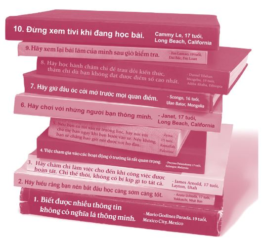
Napoleon: Không ai muốn đi chơi với tớ cả.
Pedro: Nhưng cậu đã rủ ai chưa?
Napoleon: Chưa, nhưng ai mà thèm đi với tớ chứ? Tớ không có kỹ năng nào cho ra hồn cả.
Pedro: Ý cậu là sao?
Napoleon: Cậu biết đấy, chẳng hạn như kỹ năng múa côn, kỹ năng bắn cung, kỹ năng hack máy vi tính. Bọn con gái toàn thích bạn trai có những kỹ năng tuyệt vời thôi.
- Napoleon Dynamite
Có ba điều mà tôi không thích ở trường trung học - bài tập, bài tập và bài tập. Nhưng có một thứ mà tôi thật sự thích, đó là thơ văn. Tôi có vài người bạn cũng rất mê thơ. Chúng tôi viết những bài thơ ngớ ngẩn và chia sẻ với nhau để xem thơ của ai thuộc hàng ngớ ngẩn nhất.
Ứng cử viên sáng giá cho giải thơ ngớ ngẩn nhất ấy của tôi được viết năm tôi mười sáu tuổi. Đó là vào dịp tết. Lúc bấy giờ, tôi đang xem đá bóng trên tivi cùng anh Stephen và cậu em trai David. Bọn tôi nằm ườn trên ghế sô-pha và ngốn cả núi đồ ăn vặt - pizza, bánh nachos, sô-đa và nhiều món có hại cho sức khỏe khác nữa. Thế rồi tôi bị đau đầu kinh khủng. Đến cuối ngày, bọn tôi ngủ thiếp đi. Đến khi giật mình thức dậy, tôi có một cảm giác là lạ. Tôi nhìn quanh và hoảng hồn khi thấy chân mình đang quấn vào chân Stephen. Cả hai anh em đều mặc quần đùi, bạn biết đấy, và hai cái chân đầy mồ hôi dính chặt vào nhau. Thật gớm! Sau đó tôi đã truyền tải tinh thần của khoảnh khắc ấy vào bài thơ sau đây:
MẬP VÀ ẤM
Cảm giác như thể mình đã chết
Nghe như sét đánh ngang tai
Bánh pizza, nachos và bánh vòng
Áo quần nhếch nhác và giày dép bốc mùi
Thình lình cơn bão từ đâu kéo đến
Chân cậu chạm vào chân tớ…
Cái chân mập và âm ấm.
Hồi còn đi học, tôi có tham gia vài cuộc thi viết; nhưng từ bài thơ trên, tôi cá là bạn không hề ngạc nhiên khi tôi không giành được giải gì cả. Nhưng tôi đã phát hiện ra mình có niềm đam mê với ngôn ngữ và phát hiện này đã giúp tôi quyết định mình sẽ học gì ở bậc đại học và làm gì khi trưởng thành.
Việc này đã dẫn tôi đến với quyết định quan trọng đầu tiên trong đời. Bạn sẽ làm gì với chuyện học hành của mình? Tại sao đây lại là một trong sáu quyết định quan trọng nhất? Đơn giản thôi. Việc bạn lựa chọn làm gì với chuyện học hành khi còn trẻ sẽ quyết định chất lượng cuộc sống của bạn trong năm mươi năm tiếp theo.
Cũng như các quyết định chính yếu khác, đây là quyết định mang tính bước ngoặt.
Bạn có thể chọn con đường đúng đắn - tiếp tục học ở trường, nỗ lực học tập, chuẩn bị vào đại học rồi chọn lấy một nghề nghiệp nào đó. Hoặc bạn có thể chọn con đường sai lầm - bỏ học, sống lay lắt qua ngày và không thể chuẩn bị được gì cho tương lai. Lựa chọn là ở bạn cả thôi.
Vì có quá nhiều việc quan trọng cần được thảo luận trong chương này, tôi đã chia nó thành bốn phần.
Phần thứ nhất - Theo đuổi đến cùng , được viết dành cho những bạn đang có ý định bỏ học. Vâng, tôi sẽ cố gắng thuyết phục bạn từ bỏ ý định ấy. Trong phần thứ hai - Sống sót và vươn lên , chúng ta sẽ bàn về cách duy trì động lực, hoàn thành tốt nhiệm vụ và xử lý tất cả những căng thẳng và những thăng trầm gắn liền với việc học hành. Phần thứ ba - Lên đường vào đại học - sẽ tập trung vào cách chuẩn bị, việc vào đại học và chi trả học phí cho ngành học mình lựa chọn. Cuối cùng, trong phần thứ tư - Tìm hướng đi riêng , chúng ta sẽ trò chuyện với nhau về những việc bạn muốn làm khi trưởng thành.

ĐÁNH GIÁ TỔNG THỂ TÌNH HÌNH HỌC HÀNH
Trước khi bạn đọc tiếp, hãy thực hiện bảng đánh giá tình hình học tập gồm mười câu hỏi sau đây. Bảng đánh giá này sẽ giúp bạn xác định được con đường mình đang đi. Hãy trả lời trung thực nhé! Mỗi chương đều sẽ có một bảng đánh giá tương tự.
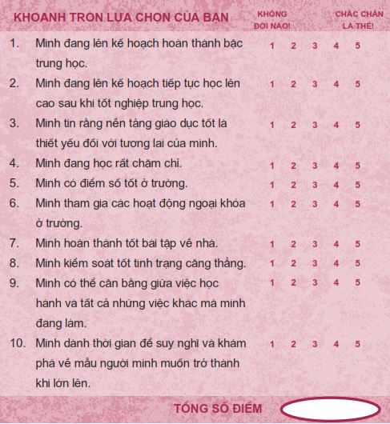
Mỗi câu trả lời trên tương đương năm điểm, tổng cộng chúng ta có năm mươi điểm. Hãy cộng tất cả điểm số của bạn lại để xem kết quả thế nào. Hãy nhớ, đây không phải là một bài kiểm tra. Sẽ không ai chấm điểm những lựa chọn của bạn cả. Đây chỉ đơn thuần là một bảng tự đánh giá nhằm giúp bạn ước lượng được các lựa chọn mà bạn đang đưa ra. Thế nên bạn đừng lo lắng về điểm số của mình nhé.
Tử 40 - 50 điểm: Bạn đang đi trên đường đúng đắn. Hãy cứ tiếp tục phát huy nhé!
Tử 30 - 39 điểm: Bạn đang bước song song trên cả hai con đường. Hãy bước hẳn sang con đường đúng đắn nhé!
Tử 10 - 29 điểm: Bạn đang đi trên đường sai lầm. Hãy đặc biệt chú tâm vào chương này.
Theo đuổi đến cùng
Nhiều năm trước đây, nhà tâm lý học Walter Mischel đã tiến hành một thí nghiệm tại một trường mẫu giáo thuộc Đại học Stanford. Ông tập trung một nhóm trẻ em bốn tuổi ngồi quanh bàn với rất nhiều kẹo dẻo ở giữa. Mischel nói với các bé rằng ông sẽ ra khỏi phòng trong vòng vài phút. Nếu bé nào có thể chờ đến khi ông quay trở lại, ông sẽ cho những bé đó hai viên kẹo dẻo. Còn những bé nào không thể chờ đợi được thì có thể ăn ngay chỉ một viên kẹo dẻo thôi. Luật chơi là ăn ngay thì chỉ được một viên, chờ đợi thì được hai viên. Sau đó ông ra khỏi phòng.
• Một số bé không thể chờ đợi và đã ăn ngay một viên kẹo khi Mischel vừa rời khỏi phòng.
• Một số bé cố gắng nhịn được vài phút thì bỏ cuộc.
• Một số khác cứ ngửi các viên kẹo dẻo.
• Một bé thậm chí còn bắt đầu liếm viên kẹo của mình.
• Một số bé quyết tâm kháng cự lại cơn thèm thuồng và chờ đợi. Các em che mắt, gục đầu xuống bàn, tự hát một mình, tự chơi các trò chơi, trốn vào góc phòng hay thậm chí là cố gắng ngủ.
Khi Mischel quay trở lại, ông đã cho các bé kiên nhẫn chờ đợi hai viên kẹo quý giá mà các em xứng đáng nhận được.
Sau đó, nhà nghiên cứu tiếp tục theo dõi cuộc sống của những em bé này cho đến khi các em vào trung học. Đáng chú ý, những bé kiên nhẫn không ăn kẹo ngay có thành tích vượt trội hơn trong cuộc sống so với những bé không thể chờ đợi. Các em thích ứng tốt hơn, tự tin hơn, nổi tiếng hơn và đáng tin cậy hơn. Các em cũng học hành giỏi hơn hẳn.
Vậy mấy viên kẹo dẻo thì có liên quan gì đến chuyện bỏ học nhỉ? Thật ra, chúng có liên quan nhiều đấy. Việc bỏ học có thể được so sánh với việc ăn ngay một viên kẹo dẻo. Viên kẹo dẻo thơm ngọt ấy thật sự rất ngon. Việc bỏ học cũng có vẻ rất hấp dẫn vào lúc đầu. Ví dụ, nếu bạn nghỉ học, bạn có thể lập tức bắt đầu kiếm tiền để mua sắm các thứ, một chiếc xe chẳng hạn. Bạn có thể chi trả tiền nhà để thuê căn hộ riêng. Quan trọng nhất, bạn có thể ngay lập tức thoát khỏi những cơn đau đầu từ bài tập về nhà và điểm số.
Thế nhưng, nếu nghỉ học bây giờ tức là bạn đã bỏ mất hai viên kẹo về sau. Đó là một đánh đổi thiếu sáng suốt. Hai viên kẹo dẻo ấy đại diện cho những kỹ năng thành thục hơn, một công việc lương cao hơn, một chiếc xe tốt hơn, thêm nhiều cơ hội để giúp đỡ người khác và một tình yêu cuộc sống sâu sắc hơn.
Chắc chắn bạn đã nghe rất nhiều lý do ai đó bỏ học hoặc tiếp tục ở lại trường. Nhưng bạn có từng suy nghĩ thấu đáo về những điều này chưa?
Bạn có nhận ra nếu bạn không tốt nghiệp trung học, hậu quả bạn phải gánh chịu chính là sẽ làm mãi một công việc lương thấp trong suốt phần đời còn lại của mình?
Vì sao ư? Vì bạn sẽ không có những kỹ năng cần thiết để có thể tìm được một công việc có mức lương tốt hơn. Một bạn trẻ tên Yolanda đã tâm sự thế này: “Mẹ mình hay nói với mình câu này, ‘Khổ trước thì sướng sau, còn nếu sướng trước thì phải khổ sau’. Ý mẹ là nếu bây giờ mình chịu khó làm những việc mình phải làm ở trường thì sau này mình sẽ trở thành một người thành đạt; còn nếu mình nuông chiều bản thân thì về sau sẽ phải chịu khổ khi chỉ có thể tìm được những công việc kiểu như bán hàng ở tiệm McDonald’s”.
Mức lương tám đến mười đô-la một tiếng nghe có vẻ khá khẩm ở thời điểm hiện tại, nhưng bạn không thể mãi giậm chân một chỗ như vậy được. Hãy tin tôi. Bạn hãy thử so sánh mức lương này với mức lương bạn có thể kiếm được nếu bạn tốt nghiệp trung học, hay thậm chí tốt hơn nữa, tốt nghiệp đại học. Dưới đây là một số thông tin về mức lương từ Văn phòng Thống kê Lao động. Mặc dù các con số này sẽ thay đổi theo từng năm, nhưng mức chênh lệch thì gần như không đổi.
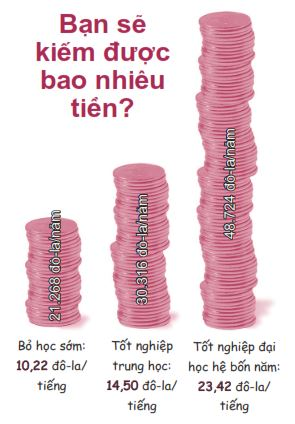
Nếu bạn nhân các con số này với tổng số năm làm việc trong suốt cả đời (khoảng bốn mươi năm), sự khác biệt sẽ càng rõ ràng hơn.
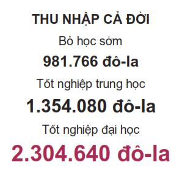
Ngoài ra, nếu bỏ học sớm, bạn sẽ không có cơ hội làm được những công việc có mức lương cao, bởi tất cả các công việc này đều đòi hỏi bạn ít nhất phải tốt nghiệp trung học và thường là bạn cần có bằng đại học hoặc đã qua đào tạo ở trường nghề.
VỢ/CHỒNG VÀ CON CÁI
Nếu bạn bỏ học trung học, ban đầu có thể bạn sẽ cảm thấy mình vẫn tự xoay xở được. Nhưng khi bạn có nhiều nhu cầu hơn hoặc nếu bạn quyết định kết hôn và xây dựng một gia đình, đồng lương của bạn sẽ bị chia năm xẻ bảy.
Vì bạn là một người trẻ vừa mới bước vào đời, bạn có thể sống qua ngày mà không cần quá nhiều tiền. Bạn chỉ cần vài người bạn cùng phòng để chia tiền nhà và khẩu vị ăn uống đơn giản với thực đơn gồm bơ đậu phộng và mì ramen. Bạn sẽ xoay xở ổn trong một thời gian ngắn. Nhưng rồi bạn sẽ dần dần chán ngấy đồ ăn rẻ tiền và những người bạn cùng phòng lúc nào cũng ồn ào. Khi bạn trưởng thành hơn và nhìn thấy bạn bè lần lượt có sự nghiệp rồi ổn định cuộc sống, bạn sẽ bắt đầu ghen tị với những gì họ có: một ngôi nhà khang trang đảm bảo sự riêng tư, xe hơi, các kỳ nghỉ, điện thoại và máy tính đời mới nhất. Rồi một ngày nọ, bạn phải lòng ai đó và quyết định kết hôn, thậm chí hai bạn có thể sinh con nữa. Lúc này, bạn sẽ cần một ngôi nhà lớn hơn, xe lớn hơn, rất nhiều tã giấy và chi phí chăm sóc trẻ con nữa.
Bảng so sánh dưới đây sẽ cho bạn thấy khoản tiền bạn cần để sống khi bạn độc thân và khi có gia đình.
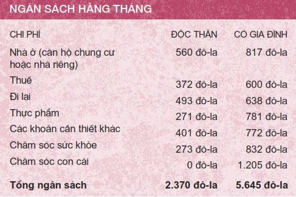
Tôi sẽ giúp bạn tiết kiệm chút thời gian tính toán: Bạn sẽ không kiếm được đủ tiền để sống tự do, thoải mái bằng cách làm việc trong ngành bán lẻ hay phục vụ bàn. Nhưng còn công việc gì khác mà bạn có thể làm khi bạn không có bằng đại học, hay thậm chí là bằng tốt nghiệp trung học?
Để có đủ tiền trang trải các chi phí trên, bạn cần phải kiếm ít nhất hai mươi bảy đô-la mỗi tiếng nếu bạn độc thân. Còn nếu có gia đình thì cả hai bạn phải kiếm được ba mươi mốt đô-la mỗi tiếng để có thể lo cho bản thân và con cái.
Nếu bạn không kiếm được chừng ấy tiền, bạn sẽ sống trong nghèo khó, khổ sở, phá sản, thậm chí là nợ ngập đầu. Lâm vào cảnh phá sản không hề lãng mạn hay vui vẻ. Bạn sẽ kiệt sức. Cuối cùng, bạn sẽ thường xuyên cãi vã với người mình yêu về chuyện tiền nong. Thế đấy, đời không như là mơ đâu các bạn ạ.
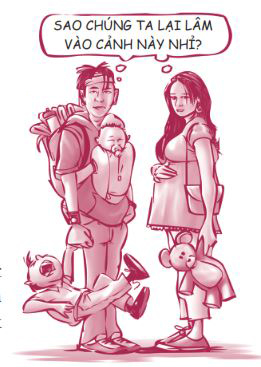
Liệu có ai bỏ học mà có cuộc sống tốt không nhỉ? Câu trả lời là có, nhưng không nhiều. Xác suất của việc bỏ học mà thành công cũng giống như trong trò xổ số vậy. Nhiều khả năng bạn sẽ không thắng. Thế thì sao ta phải mạo hiểm chứ?
Còn đây là một vài sự thật tàn nhẫn:
• Những người bỏ học sẽ gặp khó khăn hơn rất nhiều trong việc tìm kiếm và duy trì công việc: 30% những người bỏ học bị thất nghiệp.
• Những người bỏ học thường bị xem là loại người thiếu ý chí.
• Những người bỏ học thường nhảy hết việc này đến việc khác, chứ không xây dựng được sự nghiệp ổn định.
• Dù có năng lực phù hợp đi nữa, những người bỏ học cũng thường không được cân nhắc cho những công việc được trả lương cao.
• Ngày nay, tại hầu hết các quốc gia, một tấm bằng tốt nghiệp trung học là không đủ để làm hành trang cho bạn vào đời. Vlad, một bạn trẻ người Nga, nói: “Hiện nay ở Nga, bạn gần như chẳng là gì cả nếu bạn không có tấm bằng đại học. Bạn sẽ không tìm được việc làm nếu không tốt nghiệp đại học”.
Tấm poster quảng cáo dưới đây minh họa điều này rất rõ:
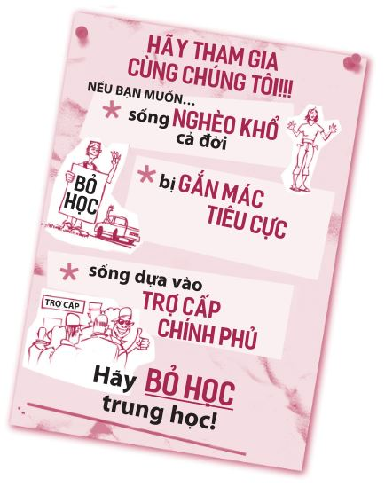
PHÁ VỠ VÒNG LẨN QUẨN
Một phần lý do khiến các bạn trẻ bỏ học là do xung quanh họ ai cũng bỏ học. Cha hoặc mẹ của họ từng bỏ học. Các anh chị em họ bỏ học. Nhiều bạn bè xung quanh cũng vậy. Có lẽ không ai trong gia đình họ từng học xong trung học hoặc vào được đại học. Nếu ai cũng bỏ học, tại sao họ phải tiếp tục học chứ?
Đôi khi chúng ta tiếp nhận từ gia đình những thói quen và nhận thức xấu được truyền từ đời này sang đời khác mà không nhận ra. Ví dụ, nếu ông nội bạn là một người nghiện rượu thì nhiều khả năng cha bạn cũng nghiện rượu. Tương tự như vậy, nạn lạm dụng, nghiện ma túy, tình trạng nghèo túng và tình trạng bỏ học cũng có thể tiếp diễn ở các thế hệ sau. Đây là lý do các gia đình bất hạnh cứ lặp đi lặp lại tình trạng này qua nhiều thế hệ.
Tin vui là bạn có quyền lựa chọn. Bạn có thể lựa chọn chủ động uốn nắn những thành viên sa ngã trong gia đình mình. Bạn có thể là người phá vỡ cái vòng lẩn quẩn trong gia đình mình. Bạn có thể chủ động không tiếp nhận những thói quen xấu từ các thế hệ trước và truyền lại những thói quen tốt cho con cháu bạn. Sẽ thật tuyệt vời nếu bạn trở thành người đầu tiên trong gia đình vào đại học và trở thành một tấm gương tốt cho con cháu mình về sau.
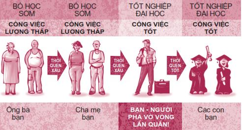
Tôi từng có lần trò chuyện với Sammi, một bạn trẻ muốn phá vỡ cái vòng lẩn quẩn trong gia đình mình. Sammi kể:
Một vài người bạn của em đã bỏ học, trong số đó có một bạn làm việc cùng em tại tiệm McDonald’s. Cậu ấy đã bỏ học hơn ba năm. Cậu ấy hai mươi tuổi và mới học đến lớp Mười Một. Em nhìn cậu ấy và chợt nhận ra em không muốn sống như cậu ấy. Em không thể làm việc ở tiệm Wendy’s hay tiệm McDonald’s cả đời được. Em không muốn sống như cha và cha dượng của em. Em không muốn một ngày nào đó em phải nhìn lại và nói: “Ôi, ước gì mình đã đưa ra những lựa chọn sáng suốt hơn”.
Quyết định không bỏ học có thể là một quyết định vô cùng khó khăn. Rất có thể bạn có hoàn cảnh gia đình khó khăn và gần như không nhận được sự hỗ trợ nào từ gia đình để theo đuổi việc học. Cũng có thể bạn không tự tin vào năng lực bản thân, bạn sợ mình không có khả năng học hành đến nơi đến chốn. Cũng có thể bạn ghét trường học, bạn không muốn đi học dù chỉ thêm một ngày. Nhưng tôi cam đoan rằng bạn sẽ không bao giờ hối tiếc khi quyết tâm theo đuổi việc học đến cùng. Đây không phải việc dễ làm, nhưng là việc rất đáng làm. Hai viên kẹo dẻo ngày mai luôn hơn hẳn một viên ngay hôm nay.
Sống sót và vươn lên
Còn bạn thì sao? Khi nghĩ đến trường lớp và chuyện học hành, bạn có những cảm xúc tích cực hay bạn thấy phát ốm? Mỗi người sẽ có một cảm nhận khác nhau. Nhưng các bạn trẻ đều có một điểm chung: Ai cũng phải vật lộn với việc học hành theo cách này hay cách khác. Khi còn đi học, tôi ghét bị căng thẳng, ghét những bài kiểm tra chuẩn hóa và môn leo dây thừng trong giờ thể dục.
Có rất nhiều thách thức ở trường. Bốn thách thức được các bạn trẻ nhắc đến nhiều nhất là:
1. “Mình bị căng thẳng.”
2. “Có quá nhiều việc để làm nhưng lại không có đủ thời gian.”
3. “Mình cóc thèm quan tâm.”
4. “Mình học hành dở tệ.”
Tin vui là những thách thức trên đều có cách để khắc phục. Chúng ta cùng tìm hiểu từng phương pháp nhé.
Thách thức 1: “MÌNH BỊ CĂNG THẲNG”
“Mọi việc chồng chất lên nhau, từ việc tập đá bóng, chơi bóng rổ cho đến bài tập về nhà. Không có cách nào thoát khỏi khối công vệc vô tận ấy. Việc nghỉ xả hơi một buổi có thể khiến bạn bị trễ tràng suốt nhiều ngày. Chỉ cần bạn không làm bài tập toán một ngày, hôm sau bạn sẽ có lượng bài gấp đôi.”
Điều buồn cười là sau khi bạn tốt nghiệp, áp lực cũng sẽ không hoàn toàn biến mất mà chỉ chuyển từ khía cạnh này sang khía cạnh khác trong cuộc sống. Sau khi tốt nghiệp, thay vì căng thẳng về chuyện học hành, bạn sẽ cảm thấy căng thẳng khi nghĩ về các hóa đơn, chuyện con cái, công việc và họ hàng. Thế nên, thay vì tìm cách chạy trốn, bạn hãy học cách đối phó với tình trạng căng thẳng. Bằng cách nào ư? Hãy thường xuyên mài bén lưỡi cưa của mình.
Mài bén “lưỡi cưa”
Khi đi máy bay, chúng ta sẽ nghe các tiếp viên hàng không hướng dẫn: “Trong trường hợp khẩn cấp, mặt nạ ô-xy sẽ rơi xuống từ trên trần. Trước hết, bạn hãy chụp mặt nạ cho chính mình, sau đó mới chụp mặt nạ cho người già hoặc trẻ em nào đang ngồi cạnh bạn”. Khi nghe những lời này, tôi vẫn thường tưởng tượng ra khung cảnh: Tôi ngồi đó với chiếc mặt nạ ô-xy trên mặt và tha hồ hít thở, trong khi đứa bé hai tuổi ngồi cạnh tôi đang thoi thóp. Việc này nghe có vẻ ích kỷ quá nhỉ?
Thế nhưng, nếu bạn nghĩ kỹ về hướng dẫn này của các tiếp viên hàng không, bạn sẽ nhận ra đó là một chỉ dẫn đúng. Bạn không thể giúp được gì cho người khác nếu chính bạn chưa thể hít thở. Đây chính là lý do bạn đừng nên nghĩ việc dành thời gian để đổi mới bản thân là ích kỷ. Nếu bạn cứ gồng mình làm việc trong một thời gian dài và không ưu tiên chăm sóc bản thân mình, bạn sẽ dần kiệt sức, bị căng thẳng nghiêm trọng và bạn sẽ không còn gì tốt đẹp để cho đi nữa. Đừng bao giờ chỉ mải mê cưa cây mà không dành thời gian để mài bén lưỡi cưa. Hãy dành thời gian trau dồi bốn yếu tố tạo nên cuộc sống của bạn: Cơ thể (sức khỏe thể chất), Trái tim (các mối quan hệ), Trí óc (trí tuệ) và Tâm hồn (tinh thần).
Hãy đánh giá xem bạn đã mài bén lưỡi cưa của mình tốt hay chưa thông qua bảng bên dưới nhé.
Đánh giá tình hình mài bén lưỡi cưa
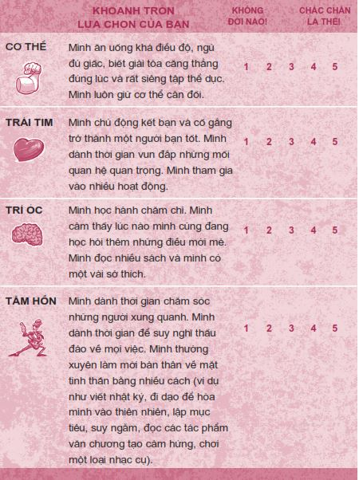
Vậy Cơ thể, Trái tim, Trí óc và Tâm hồn của bạn có đang được chú tâm đúng mức không? Nếu ở mục Trái tim bạn chỉ được hai điểm, rất có thể bạn cần phải dành thêm nhiều thời gian cho gia đình và bạn bè. Nếu bạn được ba điểm ở mục Cơ thể thì hãy sống chậm lại một chút và bắt đầu chăm sóc bản thân. Cũng giống như lốp xe của một chiếc ô tô, nếu một trong bốn phần tạo nên con người bạn bị mất cân bằng, ba phần còn lại cũng sẽ chao đảo theo. Ví dụ: Bạn khó mà học tốt (trí óc) khi đang kiệt sức (cơ thể). Tương tự, nếu bạn thấu hiểu bản thân và sống có động lực (tâm hồn) thì bạn sẽ dễ dàng trở thành một người bạn tốt (trái tim) và đạt được kết quả học tập cao nhất (trí óc).
Có rất nhiều cách để giảm căng thẳng thông qua việc mài bén lưỡi cưa. Dưới đây là những chia sẻ của các bạn trẻ khi được hỏi về cách đối phó với căng thẳng.
• “Mình chạy bộ. Việc chạy bộ giúp mình nhìn nhận các vấn đề của bản thân dưới một góc nhìn tốt hơn, nhờ đó mình có thể tìm ra giải pháp giải quyết vấn đề.”
• “Những lúc mệt mỏi, mình dành ra một tiếng đồng hồ để thương yêu bản thân và khóc cho nhẹ lòng.”
• “Mình đi tắm, đọc nhật ký rồi đi ngủ.”
• “Mình chơi bóng.”
• “Mình nâng tạ để giúp cơ thể giải phóng endorphin.”
• “Giúp đỡ người khác sẽ giúp bạn quên đi những vấn đề của chính mình.”
• “Mình đơn giản là ra khỏi nhà.”
Xác sống di động
Chúng ta hãy bàn về một trong những vấn đề lớn nhất liên quan đến sức khỏe thể chất của mỗi người, đó là giấc ngủ. Nghiên cứu cho thấy thiếu ngủ là một trong những nguyên nhân dẫn đến kết quả học tập yếu kém, các vụ tai nạn, chứng trầm cảm và những vấn đề về mặt cảm xúc. Khi mệt mỏi, bạn thường nghiêm trọng hóa các vấn đề. Những lúc bạn mệt mỏi, lời nhận xét khiếm nhã của ai đó về kiểu tóc của bạn bỗng trở thành một sự xúc phạm không thể tha thứ; hay bài thi môn lịch sử sắp tới có vẻ quá sức chịu đựng của bạn. Đó là những gì sẽ xảy ra khi bạn là một xác sống di động. Bạn bị ngợp và không thể suy nghĩ sáng suốt. Dưới đây là bốn lời khuyên về giấc ngủ bạn nên cân nhắc áp dụng:
1. NGỦ ĐỦ. Hầu hết các bạn trẻ chỉ ngủ tầm bảy tiếng một đêm. Một số bạn còn ngủ ít hơn. Tất cả các chuyên gia đều cho rằng bạn cần ngủ từ chín đến chín tiếng mười lăm phút một ngày. Đầu tiên, hãy tính xem bạn cần ngủ trong bao lâu để có sức khỏe tốt nhất, sau đó kết hợp với thời điểm bạn cần thức dậy để tính toán thời điểm đi ngủ phù hợp. Hãy nhớ rằng giấc ngủ chính là thức ăn của não.
2. NGỦ SỚM DẬY SỚM. Tôi không thể chứng minh được điều này nhưng tôi tin vào câu cổ ngữ: “Ngủ sớm dậy sớm khiến người ta khỏe mạnh, giàu có và khôn ngoan”. Một số chuyên gia về sức khỏe tin rằng một tiếng trước nửa đêm tương đương với hai tiếng sau nửa đêm. Việc ngủ sớm dậy sớm mang lại cho tôi những hiệu quả tích cực. Thói quen này ẩn chứa một sức mạnh kỳ diệu nào đó.
3. KIÊN ĐỊNH VỀ GIỜ GIẤC. Ví dụ, nếu bạn thường đi ngủ vào khoảng mười một giờ đêm các ngày trong tuần thì bạn đừng nên đi ngủ lúc ba giờ sáng vào tối thứ Sáu và tối thứ Bảy hằng tuần, để rồi sáng hôm sau lại ngủ đến trưa. Ngủ nướng vào cuối tuần có thể làm rối đồng hồ sinh học của bạn và khiến bạn gặp khó khăn khi muốn trở lại lịch sinh hoạt bình thường. Tôi không có ý nói bạn không nên thức khuya để vui vẻ một chút vào những ngày cuối tuần. Bạn vẫn có thể vui vẻ, miễn là đừng quá đà. Hãy giữ giờ đi ngủ của bạn dao động trong khoảng một vài tiếng là được.
4. THƯ GIÃN TRƯỚC KHI NGỦ. Bạn hãy thử thư giãn trước khi lên giường thay vì nốc một lon Red Bull hay các loại thức uống tăng lực. Hãy đi tắm, viết nhật ký hay đọc truyện tranh. Vài phút thư giãn trước khi đi ngủ có thể tạo nên khác biệt lớn lao.
Những lời khuyên trên đây không phải các quy tắc mọi người đều phải tuân thủ mà chỉ là những lời chỉ dẫn mang tính gợi ý. Sẽ có những lúc bạn muốn thức khuya để đi chơi với bạn bè hay những lúc bạn cần phải thức khuya để hoàn thành bài tập. Cũng có thể bạn phải vừa học vừa làm để phụ giúp gia đình và không thể ngủ đủ giấc. Quan điểm của tôi là: Hãy cố gắng hết sức, nhưng phải biết điều độ và khôn ngoan. Nếu bạn đang cảm thấy suy sụp, rối trí hay quá căng thẳng, thói quen ngủ đủ giấc hằng đêm có thể chính là phương thuốc bạn đang cần.
Thách thức 2: “CÓ QUÁ NHIỀU VIỆC ĐỂ LÀM NHƯNG LẠI KHÔNG CÓ ĐỦ THỜI GIAN!”
Một bạn trẻ tâm sự: “Mình thật sự quá bận rộn. Mình muốn trải nghiệm mọi thứ. Mình là thành viên của đội cầu lông, mình tham gia ban nhạc, học lái xe, làm hai công việc làm thêm một lúc và mình còn dạy kèm mỗi tuần một lần nữa. Mình tham gia đến năm câu lạc bộ ở trường và còn học thêm vài lớp bồi dưỡng nâng cao”.
Quá nhiều việc để làm nhưng lại có quá ít thời gian. Làm thế nào mình có thể làm được tất cả mọi việc? Bạn có thể làm được tất cả mọi việc, hay ít nhất là làm được phần lớn các công việc đó, nếu bạn sử dụng thời gian của mình một cách cẩn thận hơn. Giống như câu nói của Benjamin Franklin vậy.
Nếu mỗi ngày có hai mươi lăm tiếng thì tuyệt biết mấy nhỉ? Hãy nghĩ xem bạn có thể làm gì với bảy tiếng dôi dư ra mỗi tuần. Bạn biết gì không? Tôi cá rằng bạn đang lãng phí ít nhất từ bảy đến hai mươi tiếng mỗi tuần mà không hề nhận ra đấy. Nếu bạn muốn biết điều tôi nói có đúng không, hãy tìm xem bạn đã lãng phí bao nhiêu thời gian để thực hiện bốn hoạt động sau đây. Hãy điền vào chỗ trống trong bảng bên dưới và chúng ta sẽ bàn về từng hoạt động.
CÔNG CỤ TÌM THỜI GIAN
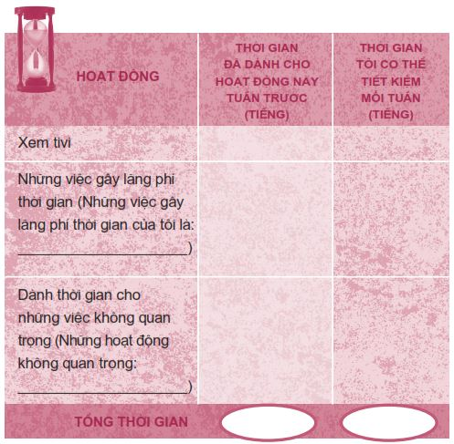
Giảm thời lượng dán mắt vào màn hình
Việc dán mắt vào màn hình chính là tác nhân gây lãng phí thời gian lớn nhất. Chiếc tivi màn hình phẳng thật to trong phòng khách, những chiếc laptop, máy tính bảng và điện thoại thông minh đang vẫy gọi sự chú ý của chúng ta từng phút từng giây. Chúng ta có thể thư giãn một chút sau giờ học bằng cách dành vài phút xem một video vui nhộn trên YouTube, chơi game trên điện thoại hay thăm hỏi bạn bè trên mạng xã hội. Nhưng việc vùi đầu vào màn hình cả ngày thì không còn là hoạt động thư giãn nữa, mà trở thành sự lãng phí thời gian. Đây là một hoạt động thuộc cung thời gian thứ tư, là việc không cấp bách mà cũng không quan trọng (xem Các Cung Thời Gian ở trang 48). Bạn có biết rằng một bạn trẻ người Mỹ dành trung bình khoảng chín tiếng đồng hồ mỗi ngày để sử dụng các phương tiện truyền thông không? Tức là họ dành sáu mươi ba tiếng mỗi tuần chỉ để chơi game, nhắn tin, chia sẻ ảnh trên Snapchat và Instagram và nhiều hơn cả là để xem tivi. Khoảng thời gian này còn nhiều hơn thời gian họ dành cho việc ngủ. Thế rồi họ lại than phiền rằng mình chẳng có thời gian để làm được việc gì cả.
TÌM LẠI THỜI GIAN: Hãy nhớ lại xem bảy ngày vừa qua bạn đã dành bao nhiêu thời gian để sử dụng các thiết bị điện tử, bao gồm cả những ngày cuối tuần. Hãy trả lời trung thực và ghi lại con số này trong mục “Thời gian đã dành cho hoạt động này hồi tuần trước” trong bảng Công Cụ Tìm Thời Gian bên trên. Giờ hãy nghĩ xem bạn có thể cắt giảm bao nhiêu thời gian dán mắt vào màn hình mà vẫn sống ổn? Hãy ghi kết quả vào phần “Thời gian tôi có thể tiết kiệm mỗi tuần”.
Giảm thiểu những tác nhân gây lãng phí thời gian cá nhân
Ngoài việc dán mắt vào màn hình một cách vô thức, chúng ta còn thường xuyên lãng phí thời gian cho những hoạt động thuộc cung thời gian thứ tư. Tôi gọi những hoạt động này là các tác nhân gây lãng phí thời gian cá nhân (Personal Time Wasters - PTW). Những tác nhân này khác nhau tùy theo từng người. Đó có thể là việc dành quá nhiều thời gian để sử dụng điện thoại, nhắn tin, chơi PlayStation hay Xbox, đi mua sắm, trang điểm, sắp xếp lại phòng ốc hoặc nghe nhạc. Đương nhiên, bạn cần thời gian để thư giãn và giải trí. Tôi không nói bạn phải dẹp bỏ hết tất cả PTW, ta chỉ cần cắt giảm thời gian dành cho một số hoạt động mà thôi. Tôi biết một cậu bạn mười sáu tuổi nọ tên Michael Sean. Mỗi ngày cậu ấy dành từ hai đến ba giờ đồng hồ để mua bán giày trên eBay. Tôi cam đoan cậu ấy có thể cắt giảm khoảng thời gian ấy xuống còn một nửa mà không gặp phải vấn đề gì.
TÌM LẠI THỜI GIAN: Hãy viết ra những tác nhân gây lãng phí thời gian cá nhân của bạn vào bảng Công Cụ Tìm Thời Gian. Giờ bạn hãy nghĩ lại xem trong bảy ngày vừa qua, bạn đã tiêu tốn bao nhiêu thời gian vào những việc đó. Hãy ghi lại lượng thời gian bạn nghĩ mình có thể cắt giảm từ những việc gây lãng phí ấy mà không cảm thấy khó chịu hay bất tiện gì.
Mỉm cười và nói Không
Cung thời gian thứ ba là chỗ của các Chuyên gia gì cũng gật (xem Các Cung Thời Gian ở trang 48). Vì muốn làm hài lòng tất cả mọi người và không bỏ lỡ bất kỳ điều gì, bạn nói đồng ý với tất cả mọi thứ để rồi khiến bản thân mình bị quá tải. Tôi rất thích chơi thể thao, tham gia các câu lạc bộ và các hoạt động ngoại khóa khác, nhưng tôi không cố làm quá sức. Vấn đề đầu tiên bạn cần nhìn lại chính là việc đi làm thêm của mình. Khoảng hai phần ba học sinh trung học ở Mỹ có công việc bán thời gian trong suốt năm học. Bạn hãy tự hỏi: “Liệu mình có thật sự cần đi làm trong lúc còn đi học không?”. Tất nhiên, có một số các bạn trẻ cần phải làm việc để hỗ trợ cho gia đình mình. Việc này cũng tốt thôi. Nhưng đa phần các bạn không cần phải đi làm thêm. Việc bạn kiếm được thêm ít tiền để mua sắm là không đáng nếu việc này gây ảnh hưởng xấu đến thành tích học tập của bạn.
Tôi thích lập luận của giáo viên kiêm tác giả Tom Loveless: “Một số người cho rằng việc đi làm thêm sẽ dạy cho các bạn trẻ tinh thần trách nhiệm và cung cấp cho các bạn nhiều kinh nghiệm thực tế. Nhưng tôi cho rằng cách tốt hơn để học về tinh thần trách nhiệm là đăng ký những lớp học khó nhất và cố gắng hoàn thành bài tập được giao một cách hiệu quả và nhanh chóng. Thật ra, ai mới là người được chuẩn bị tốt hơn để bước vào đời: một người giỏi về toán học và khoa học hay một người có kinh nghiệm nướng bánh hamburger và trả tiền thừa ở quầy thu ngân?”.
Hãy tự hỏi: “Liệu mình có đang cố làm quá nhiều việc không?”. Nếu bạn tham gia quá nhiều hoạt động và thấy bản thân không thể kiểm soát cuộc sống của mình, hãy bỏ bớt vài hoạt động ít quan trọng hơn để tập trung vào những hoạt động thật sự thiết yếu. Hãy bắt đầu học cách nói lời từ chối và hãy nói lời từ chối với một nụ cười trên môi.
Hãy đơn giản hóa mọi việc. Thay vì làm nhiều việc với kết quả làng nhàng, hãy chọn vài việc thôi nhưng làm thật xuất sắc.
TÌM LẠI THỜI GIAN: Hãy chọn ra một hoạt động không quan trọng mà bạn thường xuyên thực hiện và ghi hoạt động đó vào bảng Công Cụ Tìm Thời Gian. Hãy ghi lại lượng thời gian mà bạn đã dành cho hoạt động đó trong vòng bảy ngày vừa qua, tính luôn cả những ngày cuối tuần. Giờ thì hãy ghi lại lượng thời gian mà bạn nghĩ mình có thể tiết kiệm được nếu hạn chế thực hiện, hoặc loại bỏ hẳn hoạt động ấy.
Ngừng trì hoãn
Hồi trung học, tôi và em trai tôi dùng chung một chiếc Honda Accord cà tàng. Một hôm nọ, tôi nhận thấy cái thắng xe có vấn đề và biết mình nên mang xe đi sửa ngay. Thế nhưng, tôi đã trì hoãn đến tận khi cái thắng bắt đầu phát ra những âm thanh đáng sợ. Cuối cùng, tôi cũng phải mang chiếc xe đi sửa, nhưng đến lúc này thì cái thắng đã bị hỏng hoàn toàn. Tôi đã mất đến mấy ngày và một khoản tiền khá lớn để sửa xe, khoản tiền này chắc phải gấp năm lần so với chi phí tôi phải trả nếu chịu mang xe đi sửa sớm hơn. Tất cả cũng là do tôi đã trì hoãn những việc tôi nên làm ngay. Sự trì hoãn luôn khiến ta phải tốn nhiều tiền bạc và thời gian hơn, bất luận là trì hoãn viết bài thu hoạch, trì hoãn nói một lời xin lỗi hay trì hoãn việc nộp đơn xin việc làm thêm vào mùa hè. Hiện tại, tôi luôn cố gắng sống theo phương châm: “Bất cứ khi nào bạn có một việc cần làm, hãy hỏi bản thân hai câu: Nếu mình không làm ngay bây giờ thì khi nào làm? Nếu mình không làm thì ai sẽ làm?”.
Bạn có thói quen nhồi nhét mọi thứ vào phút chót không? Bạn biết đó, ta không mảy may học hành gì suốt cả tuần, rồi cố gắng nhồi nhét bài vở vào đêm trước ngày kiểm tra. Làm thế có hiệu quả không? Có lẽ là có hiệu quả trong ngắn hạn. Thế nhưng bạn đã từng làm việc ở nông trại bao giờ chưa? Liệu bạn có thể làm việc theo kiểu nhồi nhét như thế ở nông trại không? Tức là bạn không gieo trồng gì vào mùa xuân, trốn việc suốt cả mùa hè rồi lại ra đồng vào mùa thu để thu hoạch. Chúng ta đều biết mình không thể làm thế được, đúng không nào? Xét trong dài hạn thì cuộc sống giống với một nông trại hơn là trường học. Bạn gieo gì thì gặt nấy.
Tôi thừa nhận hồi còn học trung học, tôi từng là một Chuyên gia trì hoãn. Tôi trì hoãn học bài rồi cố gắng nhồi sọ vào đêm trước ngày kiểm tra và vẫn đạt được điểm số tốt. Nhưng sau đó tôi quên hết những gì mình đã học. Đến khi vào đại học và cao học, tôi đã phải trả giá đắt cho những năm tháng học theo kiểu nhồi sọ trước đây. Xét nhiều mặt, tôi không bao giờ có thể san bằng những lỗ hổng kiến thức của mình và tôi vô cùng hối hận về điều đó.
Có một phương pháp chữa bệnh trì hoãn được gọi là “Cứ làm đi” - “Just do it”. (Xin cảm ơn thương hiệu Nike vì phương châm tuyệt vời này!). Hãy luôn nỗ lực vươn lên trong học tập và đừng để bản thân bị tụt lại phía sau. Hãy trở thành Chuyên gia sắp xếp thuộc cung thời gian thứ hai và trau dồi khả năng lên kế hoạch của bản thân.
Tôi khuyến khích bạn dùng một loại sổ chuyên dụng cho việc lên kế hoạch. Rất nhiều trường học có phát loại sổ này cho học sinh của họ. Nếu trường bạn không phát, bạn hãy tự mua một quyển. Những quyển sổ này không quá đắt tiền và có bán ở hầu hết các cửa hàng văn phòng phẩm. Hãy chọn một quyển có lịch tháng và có chỗ trống để bạn có thể ghi chú công việc hằng tuần hay hằng ngày của mình. Hoặc bạn cũng có thể sử dụng sổ ghi chú phiên bản điện tử.
Bridgett, mười bảy tuổi, học sinh cấp ba trường Joliet, bang Illinois, đã gọi quyển sổ lên kế hoạch của cô ấy là “bạn thân”.
Thách thức lớn nhất của mình là làm thế nào có đủ thời gian để làm tất cả mọi việc. Vì vậy, mình quyết định sử dụng một quyển sổ lên kế hoạch. Đây chính là người bạn thân nhất của mình. Quyển sổ giúp mình sắp xếp các suy nghĩ. Mình là người rất hay quên. Nhưng khi có một quyển sổ lên kế hoạch, bạn có thể ghi lại mọi điều mình cần nhớ vào đó. Trước khi tan học về nhà, bạn chỉ xem qua sổ và mọi việc bạn cần làm đến hết ngày đã nằm sẵn trong đó.
Mình biết việc dùng một quyển sổ lên kế hoạch trông có vẻ thật ngốc nghếch và không đem lại công dụng gì, nhưng nếu bạn sử dụng đúng cách thì quyển sổ thật sự giúp ích cho bạn rất nhiều đấy.
Khi bạn đã có một quyển sổ lên kế hoạch trong tay, hãy ghi chú lại mọi việc: những bài kiểm tra sắp tới, ngày đến hạn nộp các bài thu hoạch, các dịp nghỉ hè, nghỉ lễ, các trò chơi, tiệc sinh nhật, những sự kiện gia đình quan trọng, v.v. Sau khi bạn viết ra mọi thứ, đầu óc bạn sẽ được thả lỏng bởi vì bạn không cần phải ghi nhớ hết tất cả nữa. Vào đầu tuần, hãy xem lại những việc cần làm trong tuần. Đừng đợi đến phút cuối mới lo học bài kiểm tra hay viết bài thu hoạch. Hãy bắt tay vào làm ngay từ sớm và hoàn thành công việc từng chút một.
TÌM LẠI THỜI GIAN: Hãy ghi lại khoảng thời gian trong tuần vừa qua bạn đã dành ra để khắc phục hậu quả cho những việc bạn trì hoãn trước đó (chẳng hạn như hàn gắn một mối quan hệ tan vỡ mà trước đó bạn đã phớt lờ; làm bù hoặc làm thêm việc bởi vì bạn bị tụt hậu quá xa; sửa chữa các thiết bị mà bạn đã không thèm chăm sóc; chữa căn bệnh đang trở nên trầm trọng thêm do làm việc quá sức). Hãy ghi lại khoảng thời gian mà bạn cho rằng mình có thể tiết kiệm được mỗi tuần nếu bạn ngừng trì hoãn.
Giờ bạn hãy cộng dồn tất cả thời gian trong cột “Thời gian tôi có thể tiết kiệm được mỗi tuần” để xem bạn sẽ tiết kiệm được tổng cộng bao nhiêu thời gian. Bạn có tiết kiệm được khoảng bảy tiếng không? Hay mười lăm tiếng? Hay thậm chí nhiều hơn thế nữa? Con số này thật đáng kinh ngạc đúng không? Giờ bạn có còn cho rằng mình không có đủ thời gian nữa không? Mỗi người chúng ta đều có một trăm sáu mươi tám tiếng đồng hồ mỗi tuần để sử dụng theo cách chúng ta mong muốn.
Thách thức 3: “MÌNH CÓC THÈM QUAN TÂM”
Đã có ai từng nói với bạn: “Em thật lười biếng ở trường, nếu em chịu chú tâm học hành, em có thể đạt thành tích rất tốt” chưa? Nếu câu trả lời của bạn là có, bạn không đơn độc đâu. Có rất nhiều bạn trẻ khác cũng bị tụt lại phía sau, có thành tích kém hay chẳng để tâm chuyện học hành.
Nếu bạn không có động lực học tập và cảm thấy mình bị ép buộc trong chuyện học hành, hãy suy nghĩ thật thấu đáo về những gì bạn có thể và không thể kiểm soát trong chuyện trường lớp. Rõ ràng có rất nhiều việc bạn không thể kiểm soát. Tuy nhiên, thật ngạc nhiên là cũng có rất nhiều việc bạn hoàn toàn có khả năng kiểm soát.
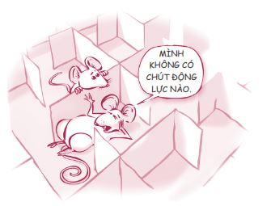
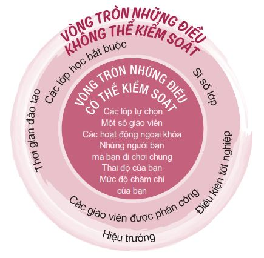
Bạn không cần phải thích chuyện học hành, nhưng xin đừng biến mình thành nạn nhân. Đừng tự nuông chiều bản thân với suy nghĩ: “Mình không thích học hành nên mình sẽ không cố gắng làm gì”. Thay vào đó, hãy tập trung vào những điều bạn có thể kiểm soát.
Việc học là trách nhiệm của bạn, không phải của nhà trường hay cha mẹ bạn. Khi bạn giã từ tuổi teen, bạn sẽ muốn mình có khả năng đọc, tư duy và diễn đạt tốt. Bạn sẽ muốn biết đôi điều về lịch sử, các quốc gia và các nền văn hóa. Bạn sẽ muốn đọc nhiều quyển sách kinh điển và tìm hiểu về những vĩ nhân thuộc các thế hệ trước. Đây chính là nội dung chương trình học của bạn. Những nội dung này có thể rất thú vị! Vì thế hãy thôi trò đóng vai nạn nhân trong chuyện học hành. Bạn phải nắm quyền chủ động. Dưới đây là một số cách giúp bạn có thêm động lực trong chuyện học hành.
• Theo đuổi một sở thích mà bạn thật sự yêu thích, ví dụ như nhiếp ảnh, mỹ thuật, khiêu vũ hay bất cứ thứ gì khiến bạn hào hứng.
• Đăng ký một lớp tự chọn bạn luôn muốn học.
• Tham gia các hoạt động ngoại khóa thú vị nhưng cũng mang tính thử thách ở trường, ví dụ như một câu lạc bộ hay một môn thể thao.
• Đăng ký làm thêm vào mùa hè hoặc làm thực tập sinh trong một lĩnh vực mà bạn thấy hứng thú.
• Đăng ký lớp học của một giáo viên giỏi nổi tiếng.
• Khởi nghiệp kinh doanh riêng.
• Chọn phân ban phù hợp với bạn. Nhiều trường có hệ thống phân ban rất đa dạng.
• Đi du lịch trong nước hoặc nước ngoài.
Ở ngay trước cửa nhà bạn
Thánh Augustine đã viết: “Thế giới là một quyển sách và những ai ru rú ở nhà chỉ đọc mỗi một trang”. Tôi hoàn toàn đồng ý với ngài. Bất luận là đi du lịch đến châu lục khác hay chỉ đơn giản ghé thăm một di tích gần nhà, việc du lịch vẫn hết sức thú vị và mang tính giáo dục cao.
Trong quyển sách tựa đề Majoring in the Rest of Your Life (tạm dịch: Tập trung chuyên môn ở phần đời còn lại ), Carol Carter đã nêu một vài ích lợi của việc du lịch như sau:
1. Du lịch có thể tạo nguồn cảm hứng để bạn khởi đầu một công việc mà mình yêu thích. Có thể bạn thích hoặc đam mê điều gì đó mà không hay biết cho đến khi bạn mở rộng trải nghiệm của mình.
2. Đi du lịch có thể giúp bạn có một kỹ năng hết sức cụ thể, hữu hình: kỹ năng nói một ngoại ngữ nào đó. Trong một vài lĩnh vực, nếu bạn có khả năng dùng một ngoại ngữ càng hiếm thì giá trị của bạn càng tăng. Việc thêm vào sơ yếu lý lịch thông tin “Tôi đã trải qua ba tháng hè ở Romania” sẽ là một lợi thế lớn cho bạn.
3. Đi du lịch có thể mở rộng vùng an toàn của bạn và giúp bạn thêm tự tin. Nếu bạn có thể tự mình xoay xở tại một thành phố ngoại quốc với nền văn hóa và ngôn ngữ xa lạ thì việc xoay xở trong bối cảnh quen thuộc ở quê nhà bỗng trở nên dễ như trở bàn tay.
4. Du lịch có thể khiến bạn thêm yêu quý các nền văn hóa, các dân tộc khác và mang đến cho bạn cảm giác biết ơn sâu sắc đất nước và di sản dân tộc của mình.
5. Việc đi du lịch vô cùng thú vị và mang lại nhiều niềm vui. Hãy thử tưởng tượng việc bạn có thể tận hưởng khoảng thời gian vui vẻ trong lúc học thêm được nhiều điều mới! Bạn sẽ được tận mắt chứng kiến những thắng cảnh mà trước đây bạn chỉ được nhìn thấy qua sách vở, chẳng hạn như Bảo tàng Louvre ở Paris, Vạn Lý Trường Thành ở Trung Quốc hay Quảng trường Thời Đại ở thành phố New York.
Khi đọc đến đây, bạn có thể tự nhủ: “Nghe có vẻ hay đấy. Nhưng mình phải bắt đầu như thế nào đây? Mình lấy tiền ở đâu ra? Và làm thế nào thuyết phục được cha mẹ cho phép mình đi du lịch bây giờ?”. Nếu bạn thật sự thích du lịch, dù là trong nước hay ngoài nước, có vô số nguồn lực, rất nhiều chương trình và rất nhiều người sẵn lòng giúp đỡ bạn. Bạn không nhất thiết phải tiêu tốn cả gia tài để đi du lịch. Nếu bạn chưa có kinh nghiệm, hãy tham khảo các ý tưởng sau đây:
• Tận dụng các chương trình du lịch do trường tổ chức. Gần như trường nào cũng có một vài chương trình như vậy. Hãy nói chuyện với giáo viên chủ nhiệm, giáo viên tổng phụ trách hoặc những người nắm thông tin về vấn đề này ở trường bạn. Các chuyến du lịch nước ngoài thường sẽ được tài trợ.
• Tham gia một tổ chức tình nguyện. Có rất nhiều tổ chức đang rất cần tình nguyện viên. Bạn có thể đi đến những quốc gia kém phát triển trên thế giới và giúp cuộc sống một số người trở nên tốt đẹp hơn, đồng thời cũng làm cuộc sống của chính mình thêm phong phú. Dan, cậu hàng xóm mười bảy tuổi của tôi, đã tham gia tổ chức Operation Smile được ít lâu. Đây là một tổ chức gồm nhiều bác sĩ và tình nguyện viên. Hằng năm, Operation Smile tổ chức những chuyến đi ngắn ngày đến các quốc gia kém phát triển để tiến hành hàng ngàn ca phẫu thuật cho các trẻ em bị dị tật trên mặt, chẳng hạn như tật hở hàm ếch. Những ca phẫu thuật đơn giản này sẽ giúp các em có lại cuộc sống bình thường. “Đây chính là trải nghiệm ý nghĩa nhất trong suốt thời trung học của em”, Dan kể với tôi.
• Tham gia chương trình trao đổi sinh viên. Hãy đăng ký ở cùng một gia đình bản xứ và hoàn toàn hòa mình vào nền văn hóa của họ.
• Đi công tác cùng cha mẹ. Trong ngày, trong khi cha mẹ bạn làm việc, bạn có thể tự mình thăm thú thành phố, tham quan viện bảo tàng hay các di tích lịch sử và ăn trưa tại các nhà hàng địa phương. Tối đến, cả gia đình có thể cùng nhau đi ngắm cảnh.
Nếu muốn tìm thêm nhiều cơ hội du lịch, bạn chỉ cần tìm kiếm trên mạng, nói chuyện với giáo viên chủ nhiệm của mình, đến thư viện hoặc học hỏi kinh nghiệm từ một người đã từng đi du lịch nhiều. Bridgett, một nữ sinh cấp ba mười bảy tuổi, đã thật sự được truyền cảm hứng thông qua các chuyến du lịch của mình.
Một ngày nọ, mình nói với mẹ: “Mẹ ơi, con muốn đi du lịch. Con nghĩ sẽ vui lắm mẹ ạ”. Mẹ mình nói: “À, một ngày nào đó con sẽ có thể đi, thông qua diện trao đổi sinh viên với nước ngoài hay các chương trình tương tự”.
Thế là mình bắt đầu tìm kiếm thông tin trên mạng. Mình tìm ra khá nhiều thông tin về các chương trình trao đổi sinh viên, rồi mình đến nhờ giáo viên cố vấn của mình tư vấn để đảm bảo các chương trình này là hợp pháp. Mình và giáo viên của mình tìm được một chương trình có tên Youth For Understanding. Sau đó, mình đã tìm hiểu kỹ hơn về chương trình này và quyết định mình muốn tới Nhật Bản. Nhưng chi phí cho chuyến đi lên đến 5.000 đô-la. Thế nên mình đã nộp đơn lên tổ chức Okinawa Peace Scholarships xin được cấp một phần học bổng. Khoảng ba tháng sau, mình nhận được một suất học bổng chi trả gần như toàn bộ chuyến đi của mình.
Thế là mình lên đường đến Okinawa, hòn đảo được mệnh danh là Hawaii của Nhật Bản. Mình đã ở đó sáu tuần và thậm chí không muốn về nhà nữa. Cha mẹ mình nói rằng mình không được đi thêm chuyến đi sáu tuần nào nữa, nhưng năm nay mình sắp có một chuyến đi được tài trợ đến Ireland!
Bạn biết đấy, rốt cuộc thì thế giới này thật nhỏ bé. (Câu này nghe quen nhỉ!). Thế nên hãy thoát khỏi cái nhà giam nhỏ hẹp đang giam cầm tâm trí bạn và bắt đầu khám phá thế giới mênh mông đang chờ đợi bạn ở ngay trước cửa nhà.
Thách thức 4: “MÌNH HỌC HÀNH DỞ TỆ”
Kết quả học tập của bạn có thể không khả quan lắm. Hoặc có thể bạn cho rằng mình không có được những tố chất cần thiết để học giỏi. Nhưng hãy cứ ngẩng cao đầu bạn nhé. Một số bộ óc vĩ đại nhất thế giới cũng từng cảm thấy như vậy. Bạn có biết họ không?
Albert Einstein được xem là người có tầm ảnh hưởng lớn nhất thế kỷ 20, thế nhưng ông là người mãi đến năm bốn tuổi mới biết nói và bảy tuổi mới biết đọc. Cha mẹ ông đã nghĩ con mình bị chậm phát triển. Ông nói năng ngắc ngứ đến tận năm chín tuổi. Một giáo viên còn từng khuyên ông bỏ học từ cấp tiểu học: “Em sẽ không đạt được thành tựu gì đâu, Einstein ạ”.
Isaac Newton là nhà khoa học đã đặt nền móng cho vật lý học hiện đại, nhưng ông từng có lúc học toán rất tệ.
Patricia Polacco là nhà văn viết cho thiếu nhi sáng tác rất đều tay, thế nhưng đến tận năm mười bốn tuổi bà mới học đọc.
Henry Ford là người đã phát triển mẫu xe hơi Model T và gầy dựng nên Công ty Ford Motor. Ông chỉ học đến hết trung học thôi.
Lucille Ball là diễn viên hài nổi tiếng và là ngôi sao của bộ phim I love Lucy (tạm dịch: Tôi yêu Lucy). Bà từng bị đuổi khỏi trường sân khấu vì quá trầm lặng và nhút nhát.
Ludwig van Beethoven là một trong những nhà soạn nhạc vĩ đại nhất thế giới. Giáo viên âm nhạc của ông từng nhận xét về ông như sau: “Cậu bé không có cơ may nào trở thành một nhà soạn nhạc cả”.
Pablo Picasso là một trong những nghệ sĩ vĩ đại nhất mọi thời đại. Ông từng bị đuổi học năm mười tuổi do thành tích học tập quá kém. Thậm chí vị gia sư được cha Pablo thuê về dạy cậu cũng phải đầu hàng với cậu bé.
Wernher von Braun là nhà toán học nổi tiếng thế giới, nhưng ông từng thi trượt môn đại số năm lớp Chín.
Agatha Christie là nhà văn trinh thám nổi tiếng nhất thế giới và là tác giả có sách bán chạy nhất mọi thời đại, bên cạnh William Shakespeare, đã từng phải vật lộn để học đọc vì bà mắc phải chứng khó đọc.
Winston Churchill là vị thủ tướng nổi tiếng của Anh Quốc, đã từng thi rớt năm lớp Sáu.
Dù gặp phải nhiều khó khăn trong chuyện học hành, những con người vĩ đại này vẫn đóng góp được nhiều điều tốt đẹp cho đời và bạn cũng có thể làm được như thế. Bạn thấy việc học quá khó khăn với mình không có nghĩa là bạn không thông minh. Có rất nhiều loại trí thông minh khác nhau. Thế nhưng thành công trong học tâp chỉ chủ yếu dựa trên một loại mà thôi: khả năng phân tích, lý luận, tư duy trừu tượng và sử dụng ngôn ngữ. Đây là những khả năng mà một bài kiểm tra IQ có thể đo lường được.
Tuy nhiên, bên cạnh IQ, còn có nhiều loại thông minh khác cũng không kém phần quan trọng. Ví dụ, ta còn có trí thông minh cảm xúc (emotional intelligence) - EQ. Những người có chỉ số EQ cao có trực giác rất mạnh, có thể nắm bắt nhanh các tình huống giao tiếp xã hội và có khả năng sống hòa hợp với người khác. Trường học không kiểm tra những khả năng này. Ngoài ra, ta còn có trí thông minh trực giác (spiritual intelligence) - SQ. SQ đại diện cho lòng khao khát và khả năng đạt được một tầm nhìn toàn diện, một cuộc đời có giá trị và ý nghĩa. Trí thông minh này giúp chúng ta sống có ước mơ. Trường học cũng không đo lường khả năng này. Cuối cùng là trí thông minh thể chất (physical intelligence) - PQ. Cơ thể bạn vốn rất thông minh. Bạn không cần phải nhắc nhở tim mình đập hay nhắc lá phổi mình căng ra khi bạn hít vào. Trí thông minh thể chất còn là khả năng học hỏi thông qua các phương tiện vận động thể chất, chẳng hạn như các giác quan và xúc chạm cơ thể.
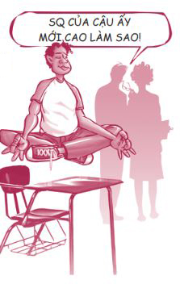
Thế mạnh của bạn bè bạn có thể là IQ, còn thế mạnh của bạn là EQ. Không cái nào tốt hơn cái nào cả, chỉ là khác nhau mà thôi. Hãy trân trọng những tài năng độc đáo bạn đang có, đồng thời đừng tin khi có ai nói rằng bạn bất tài theo một cách nào đó. Nếu bạn từng bị chọc ghẹo, hãy nhớ những gì Albert Einstein, người cũng từng bị chọc ghẹo rất nhiều, đã nói: “Những bộ óc vĩ đại sẽ luôn gặp phải sự chống đối thô bạo từ những bộ óc tầm thường”.
Nếu khả năng học tập của tôi có vấn đề thì sao?
Nếu bạn nghi ngờ mình mắc các khiếm khuyết về khả năng học tập, ví dụ như chứng rối loạn tăng động giảm chú ý (ADHD), giảm chú ý (ADD), chứng khó đọc hoặc không có khả năng tập trung, bạn có thể thử một số biện pháp sau. Thứ nhất, hãy tìm đến một chuyên gia để xác nhận liệu bạn có thật sự gặp vấn đề hay không. Nếu có, các chuyên gia sẽ đề xuất một số liệu trình chữa trị. Một số bạn trẻ được chỉ định dùng thuốc và đã đạt được kết quả khả quan. Các bạn khác dùng các phương pháp thay thế như chế độ dinh dưỡng, liệu pháp tâm lý, kiểm soát căng thẳng, tập thể dục, sử dụng các loại thảo dược hoặc kết hợp nhiều phương pháp với nhau. Vẫn có nhiều bạn cho rằng khả năng học tập của mình gặp vấn đề trong khi thực tế họ không bị sao cả.
Thứ hai, đừng mặc nhiên cho rằng mình bị khuyết tật! Bạn hoàn toàn có khả năng thành công trong học tập và cuộc sống, bất luận bạn có bị chẩn đoán mắc phải chứng bệnh gì đi nữa. Bạn sẽ rất ngạc nhiên khi biết rằng có hàng ngàn doanh nhân, luật sư, bác sĩ, giáo viên, nhạc sĩ và diễn viên thành công từng được chẩn đoán mắc chứng khó đọc, giảm tập trung hoặc một vấn đề nào đó liên quan đến khả năng học tập.
Nếu việc học quá khó khăn với bạn, bạn hãy xem học hành là một điểm yếu bạn cần khắc phục, giống như một người không có khả năng phối hợp phải học cách khắc phục điểm yếu của mình để trở thành một cầu thủ bóng đá giỏi. Đúng là bạn sẽ phải làm việc chăm chỉ hơn người khác một chút, nhưng bạn có thể thành công và biến điểm yếu thành điểm mạnh của mình!
Greg Fox đã chia sẻ câu chuyện của cậu ấy.
Một ngày đẹp trời nọ, một giáo viên lạ mặt khẽ đặt tay lên vai tôi và bảo tôi theo cô ấy vào một phòng học nhỏ. Cô hỏi tôi vài câu về cuộc sống của tôi và ghi chú lại tất cả những gì tôi nói. Ngày hôm sau, tôi lại được yêu cầu đến phòng học ấy để làm một số bài kiểm tra. Suốt năm học đó và cả những năm tiếp theo của bậc trung học cơ sở, tuần nào tôi cũng làm những bài kiểm tra tương tự. Một vài bạn khác cũng làm các bài kiểm tra ở phòng học ấy cùng tôi. Đến sau này tôi mới biết nhà trường đã đánh giá bọn tôi là L.D. (learning disable), tức không có khả năng học tập.
Một khi đã bị xem là một học sinh không có khả năng học tập, chúng tôi cũng bị các giáo viên đối xử theo cách tương ứng - cách dành cho người thiểu năng. Các giáo viên cho chúng tôi biết đáp án của các bài tập toán, giúp chúng tôi hoàn thành bài tập về nhà và cho phép chúng tôi làm các bài kiểm tra không giới hạn thời gian. Các giáo viên không kỳ vọng gì nhiều ở tôi và thế là họ nhận lại đúng những gì họ kỳ vọng. Khi lên cấp ba, tôi đã quen với việc được đối xử đặc biệt như thế và tôi bắt đầu dùng sự “thiểu năng” của mình làm cái cớ để không phải làm bài hay học bài. Tôi đã tự hạ thấp chính mình.
Vào năm cuối cấp ba, tôi được xếp vào cùng lớp với một vài bạn “thiểu năng” khác. Lớp chúng tôi do một giáo viên mới phụ trách, thầy Weisberg. Thầy là một giáo viên trung niên. Thầy Weisberg đã từ bỏ nghề luật sư để giúp đỡ các bạn trẻ có hoàn cảnh như tôi nhận ra tiềm năng thật sự của mình. Và thầy đã nhận lại chính xác những gì thầy kỳ vọng. Thầy không chấp nhận bất cứ lời chống chế nào của tôi. Lần đầu tiên trong đời, tôi phải chịu trách nhiệm cho việc học hành của mình, phải học cách ngừng kiếm cớ để trốn việc.
Thời điểm đó, tôi giống như một con nghiện đang trong quá trình bình phục, tôi thèm thuồng chỗ dựa đã chống đỡ cho mình suốt nhiều năm qua. Lúc đầu, mọi việc thật khó khăn, nhưng dần dần thầy Weisberg đã giúp tôi tin tưởng vào chính mình và nhận ra bản thân là một người có tiềm năng vô hạn. Ban đầu tôi rất ghét thầy Weisberg vì thầy không nhân nhượng cho thói lười biếng của tôi, nhưng rồi chúng tôi đã cùng nhau phá bỏ những rào cản vô hình của việc bị gắn mác tiêu cực.
Tôi đã tốt nghiệp trung học và đang chuẩn bị lấy bằng cử nhân ngành Ngôn ngữ Anh với toàn điểm A trong suốt thời gian học. Tuy nhiên, quan trọng hơn cả việc có được tấm bằng với điểm trung bình cao ngất chính là việc tôi đã học được cách tin tưởng ở bản thân và biết chịu trách nhiệm cho tương lai của mình. Tôi chỉ hối tiếc những năm tháng tôi đã tự giam hãm bản thân vào cái khuôn người khác áp đặt cho mình.
Sự thật là chúng ta có khuynh hướng sống theo những gì người khác nghĩ về ta và những gì “chúng ta” nghĩ về chính mình. Nếu bạn gặp khó khăn trong học tập, hãy kiên trì và đừng tự hạ thấp mình. Đừng chấp nhận những cái mác người khác cố gán cho bạn. Và vì Chúa, đừng bao giờ tự gắn mác bản thân. Những tấm mác ấy đều có tầm nhìn ngắn hạn và không phản ánh được tất cả tài năng bẩm sinh mà chúng ta được ban tặng.
Tôi còn nhớ đã từng gặp một cô gái hết sức sôi nổi tên là Amelia. Cô vừa tốt nghiệp Đai học Weber State, chuyên ngành Công nghệ tự động. Cô là cô gái duy nhất trong trường tốt nghiệp ngành học này. Thành tích của cô tốt đến nỗi vài công ty lớn đã đề nghị cô về làm việc cho họ, trong đó có cả công ty Harley-Davidson.
Amelia lớn lên trong một gia đình có hoàn cảnh khốn khó ở Provo, bang Utah. Cô là một trong năm người con của một bà mẹ đơn thân phải làm nhiều công việc một lúc để lo cho các con của mình.
“Mẹ mình đã nói rõ ngay từ đầu là bà không đủ sức chi trả tiền học phí học đại học cho mình và luôn nhắc đi nhắc lại rằng một suất học bổng vào đại học là tấm vé duy nhất để mình có được một cuộc sống tốt đẹp hơn.”
Thế nhưng suốt những năm tiểu học, Amelia học rất tệ. Đặc biệt, cô gặp rất nhiều khó khăn trong việc đọc. Mãi đến trung học cô mới phát hiện ra vấn đề của mình.
“Một lần nọ mình đang tập đọc thành tiếng và cứ đọc sai các từ hết lần này đến lần khác. Mẹ mình bắt đầu chú ý đến việc này và hỏi mình: ‘Sao con cứ đọc sai hoài vậy?’. Mình trả lời mẹ: ‘Con không biết, lúc nào con cũng phải đọc lại hai đến ba lần mới đọc đúng được’. Đến tận lúc đó, mẹ mình mới phát hiện ra vấn đề. Sau nhiều năm tự hỏi tại sao mình lại ghét đọc và phải vật lộn ở trường như thế, cuối cùng mình đã được chẩn đoán mắc chứng khó đọc nghiêm trọng. Trước đó, mình không biết tại sao việc học lại khó khăn với mình như vậy, thậm chí cả thầy cô và mẹ mình cũng không biết mình mắc chứng bệnh này.”
Nhân đây, tôi xin chia sẻ với các bạn về chứng khó đọc. Đây là một tật mà khi bạn mắc phải, các chữ cái bạn đang đọc sẽ trở nên lộn xộn hết cả lên. Suốt nhiều năm trời, những người mắc chứng khó đọc bị cho là ngu đần, cho đến khi Margaret Rawson phát hiện ra chứng bệnh này và mở đường cho hàng triệu trẻ em - những người chưa từng biết điều gì đang diễn ra trong đầu mình. Ảnh dưới đây minh họa cách một câu xuất hiện trong mắt của người mắc chứng khó đọc.
May mắn thay, trong suốt thời trung học và đại học, Amelia đã có một vài người bạn thực thụ, họ đã giúp cô vượt qua chứng khó đọc của mình.
Mình vô cùng may mắn khi có một người bạn cùng phòng tốt bụng như Abby. Mình gặp rất nhiều khó khăn trong việc đọc, thậm chí với cả những thứ do mình tự viết ra. Thỉnh thoảng, mình sẽ đọc bài làm của mình và nhờ Abby đánh máy giúp. Có nhiều đêm bạn ấy đã làm việc cùng mình hàng giờ đồng hồ. Mình sẽ không thể nào tốt nghiệp được nếu không có bạn ấy. Mỗi khi mình căng thẳng về bài vở, chứng khó đọc của mình lại trở nên trầm trọng hơn. Trong các lớp bồi dưỡng, mình phải đọc từ năm đến sáu quyển sách cho mỗi lớp học và Abby đã đọc tất cả những quyển sách này cho mình nghe. Sau khi làm xong bài vở của bạn ấy, Abby thường đọc bài tập về nhà của mình cho mình nghe đến tận hai giờ sáng.
Dù mẹ của Amelia từng mong muốn cô trở thành một luật sư, bà vẫn hết sức tự hào về cô con gái theo học chuyên ngành cơ khí của mình. Nếu làm việc chăm chỉ và nhận được sự giúp đỡ của những con người tốt bụng, chính bạn cũng có thể vươn lên từ những khó khăn trầm trọng trong việc học hành, giống như Amelia vậy.
7 BÍ QUYẾT ĐỂ ĐẠT ĐIỂM CAO
Tôi tin rằng bất cứ ai trong chúng ta cũng có thể đạt điểm cao nếu ta thật sự muốn thế, thậm chí dù trước nay ta chưa từng đạt điểm cao hay ta phải vật lộn với việc học hành. Tất nhiên, chúng ta cố gắng học hành không phải chỉ vì muốn đạt điểm cao. Thật ra bạn vẫn có thể đạt điểm cao dù không học hỏi được gì nhiều. Nhưng nhìn chung, kết quả học tập tốt là một dấu hiệu cho thấy những nỗ lực của bạn đã được đền đáp xứng đáng. Vậy điểm như thế nào là cao? Mỗi người sẽ có một nhận định khác nhau và tiêu chuẩn này hoàn toàn tùy thuộc vào bạn. Dưới đây là bảy bí quyết để đạt điểm cao.
Bí quyết 1: Tin tưởng vào bản thân
Mọi việc đều bắt đầu từ nhận thức của bạn, từ những gì bạn nghĩ trong đầu. Bạn phải tin tưởng mình có thể làm được điều này. Một bạn trẻ tên Josh đã chia sẻ câu chuyện của mình:
Suốt thời trung học, điểm số của mình lúc nào cũng rất tệ. Mình chơi thể thao rất giỏi nhưng lại không có khả năng đạt điểm cao. Việc này thật sự làm tổn thương lòng tự trọng của mình. Mình đã giữ nguyên suy nghĩ này khi vào đại học. Và bạn có thể đoán được rồi đấy, mình cũng không đạt điểm cao ở đại học. Mình muốn trở thành nha sĩ nhưng lại luôn cho rằng bản thân sẽ không bao giờ có thể đạt đủ số điểm cần thiết để thực hiện ước mơ của mình.
Một ngày nọ, khi mình đang dùng máy vi tính thì một bài kiểm tra IQ bỗng xuất hiện trên màn hình. Mình còn nhớ cha mẹ từng nói rằng mình từng đạt điểm IQ rất cao hồi tiểu học. Thế là mình làm bài kiểm tra đó và kết quả đã khiến mình vô cùng kinh ngạc. Mình đạt 140 điểm! Không thể tin được. Chương trình đã đưa ra gợi ý về những công việc phù hợp với khả năng của mình. Và bạn biết không, một trong các gợi ý chính là ngành nha khoa. Ngay lúc đó, suy nghĩ của mình hoàn toàn thay đổi. Ở học kỳ tiếp theo của bậc đại học, mình được toàn điểm A và một điểm B+. Mình ước gì mình đã tin tưởng ở bản thân hồi còn học trung học như cách mình đang tin tưởng bản thân ở hiện tại.
Đừng bao giờ nghĩ rằng bạn ngu ngốc hay “không có khả năng đạt điểm cao”. Mọi người đều có khả năng, thậm chí cả những người được cho là không có năng lực học tập, những người từng có thành tích học tập kém trong quá khứ hay những người không có được sự ủng hộ từ gia đình. Tất cả đều khởi đầu bằng niềm tin của bản thân bạn.
Bí quyết 2: Đi học đầy đủ
Regina Brett, tác giả có sách bán chạy nhất, từng nói: “Phần lớn cuộc sống là sự hiện diện”. Nhiều bạn trẻ trốn học rồi lại thắc mắc tại sao mình lại bị điểm kém. Nếu bạn đi học đầy đủ, mọi chuyện sẽ trở nên suôn sẻ hơn. Bạn sẽ có mặt để làm những bài kiểm tra đột xuất. Bạn sẽ có mặt khi giáo viên thông báo về các bài tập được điểm cộng. Bạn cũng sẽ có mặt khi giáo viên gợi ý cách ôn tập cho bài kiểm tra sắp tới.
Bí quyết 3: Kiếm thêm điểm cộng
Bất cứ khi nào giáo viên đưa ra cơ hội để được điểm cộng, bạn hãy nắm bắt ngay những cơ hội ấy. Những yêu cầu này thường rất dễ nhưng lại có thể mang đến cho bạn nhiều điểm cộng đồng thời còn giúp bạn chuẩn bị cho các bài kiểm tra. Thật ngạc nhiên là hầu hết học sinh lại không biết tận dụng điểm cộng. Tôi còn nhớ tôi đã đăng ký học một lớp lượng giác học hồi trung học và bất luận tôi học hành chăm chỉ đến đâu, điểm các bài kiểm tra của tôi cũng chỉ đạt mức B hoặc C. Nhưng tôi đã cố gắng nộp đúng hạn tất cả bài tập được giao và làm tất cả các nhiệm vụ có thể để có thêm điểm cộng và cuối cùng tôi đã được điểm A môn học đó. Thật tuyệt!
Bí quyết 4: Tạo thiện cảm với thầy cô
Hãy chào hỏi các thầy cô của mình. Hãy thân thiện và thể hiện sự tôn trọng với họ. Hãy thay đổi cảm nhận của họ về bạn bằng cách tự giác ngồi bàn đầu. Đừng bị hoang tưởng rằng thầy cô giáo luôn chờ thời cơ để bắt bí bạn. Trong hầu hết trường hợp, họ không hề có ý định đó đâu. Nếu bạn không thể hoàn thành bài tập đúng hạn thì cũng đừng sợ hãi, hãy thử xin phép được nộp trễ hơn một chút. Thỉnh thoảng các thầy cô cũng đồng ý đấy.
Các thầy cô giáo cũng giống chúng ta thôi. Nếu bạn tốt với họ, họ sẽ tốt với bạn và giúp bạn cảm thấy bớt áp lực. Hồi còn học trung học, Rebecca, vợ tôi, rất giỏi tạo thiện cảm với các thầy cô giáo của cô ấy.
Hồi tôi học cấp ba tại trường Trung học Madison, giáo viên dạy hóa của tôi là thầy Kramer. Thầy trông rất quê mùa nhưng lại cực kỳ thông minh. Tôi học hóa rất tệ. Tôi từng nài nỉ thầy: “Thầy Kramer, xin thầy giúp em với ạ. Em thường bị điểm kém trong lớp của thầy. Nhưng em xin thề là em đang thật sự rất cố gắng”. Rồi tôi bật khóc. Không phải tôi đang giả vờ. Tôi khóc vì bản thân đang học hành sa sút. Sau đó, tôi bắt đầu đến lớp thật sớm vào mỗi buổi sáng và thầy đã giúp tôi lấy lại kiến thức. Tôi chủ động hỏi thầy về các nhiệm vụ có thể mang về cho tôi điểm cộng và hoàn thành mọi nhiệm vụ thầy giao. Tôi ở lại trường ôn bài sau giờ học. Cuối cùng, điểm số môn hóa của tôi đã được cải thiện rất nhiều. Tôi đạt được kết quả này có lẽ vì tôi đã thành thật với thầy và bởi vì tôi đã thật sự rất cố gắng.
Bạn có thể xem đây là hành động nịnh bợ nếu muốn, còn tôi thì cho rằng đó là hành động khôn ngoan.
Bí quyết 5: Mạnh mẽ trong những thời điểm quan trọng
Trên sân bóng có một khu vực gọi là khu cấm địa. Đây là khu vực cách đường biên cuối sân 16,5 mét. Khu cấm địa là nơi khó chơi nhất trên sân. Bạn có thể di chuyển bóng lên xuống trên sân theo bất cứ cách nào bạn muốn, nhưng nếu bạn để mất bóng trong khu cấm địa thì bạn sẽ không được điểm nào.
Rất nhiều bạn trẻ học hành chăm chỉ suốt cả một học kỳ dài để rồi lại buông xuôi vào những tuần cuối cùng vì quá mệt mỏi. Trong trường học, khu cấm địa chính là thời điểm gần thi cuối kỳ. Vào khoảng thời gian này, mọi thứ đều đang trong tình trạng dầu sôi lửa bỏng, bạn phải oằn mình chịu đựng và cố hết sức hoàn thành mọi việc. Bài thi cuối kỳ là bài thi quan trọng nhất, chiếm tỷ lệ điểm số cao hơn tất cả các bài tập mà bạn đã nộp từ trước đến nay cộng lại. Tuần cuối cùng của học kỳ cũng là khi bạn phải làm rất nhiều bài kiểm tra và nộp nhiều bài tập hay các bài thu hoạch cuối khóa chiếm đến một phần ba điểm số của bạn. Đây là lúc bạn cần phải mạnh mẽ. Sự khác biệt duy nhất giữa những bạn đạt điểm cao và những bạn không có thành tích như mong đợi chính là sự mạnh mẽ trong khoảng thời gian quan trọng này.
Tôi sẽ không bao giờ quên lần tôi làm bài kiểm tra cuối khóa khi còn học đại học. Bài kiểm tra hôm ấy kéo dài ba tiếng đồng hồ và chiếm một nửa điểm tổng môn học đó của chúng tôi. Khi thời gian làm bài trôi qua được một nửa, một cậu bạn cùng lớp của tôi bỗng đứng dậy, nộp bài và bước ra khỏi phòng thi. Rõ ràng cậu ấy đã quá mệt mỏi và chán ngán bài kiểm tra. Tôi tự nhủ: “Cậu đúng là đồ ngốc. Sao cậu không cố làm cho xong? Cậu đã học môn này suốt bốn tháng ròng. Cậu đã bỏ ra hàng trăm tiếng đồng hồ để làm bài tập. Thế rồi khi chỉ còn vài tiếng nữa là hoàn thành môn học, cậu lại không thể chiến đấu đến phút cuối cùng”.
Bài học rút ra từ câu chuyện là: Hãy mạnh mẽ vào những thời khắc quyết định.
Bí quyết 6: Tập trung các nguồn lực của bạn
Từ khi tôi còn nhỏ, cha tôi thường dẫn cả gia đình đi trượt nước vào mỗi mùa hè. Cứ mỗi khi có ai đó trong mấy anh em tôi không thể đứng vững trên ván trượt, ông sẽ hét lên thật to từ trên thuyền: “Cứ tiếp tục cố gắng, con yêu. Con có thể làm được mà. Hãy sạc lại pin, giữ vững ý chí và tập trung mọi nguồn lực của con lại đi nào!”. Không đứa nào trong chúng tôi hiểu nổi cha đang nói gì. Nhưng tôi không bao giờ quên những lời cha nói. Mặc dù tôi vẫn chưa biết cách “sạc lại pin”, tôi biết ý cha là gì khi ông nói “tập trung mọi nguồn lực của con lại đi nào!”.
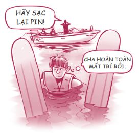
Trong việc học hành, tập trung mọi nguồn lực có nghĩa là bạn để mọi người xung quanh cùng tham gia giúp bạn đạt điểm cao, chẳng hạn như thầy cô giáo, bạn bè, anh em họ, ông bà, cha mẹ, những người làm công tác cố vấn, v.v. Hãy tìm một người nào đó tin tưởng và quan tâm đến bạn và nhờ họ giúp đỡ bạn trong việc học tập. Hầu hết các trường đều có một đội ngũ chuyên viên tư vấn xuất sắc luôn sẵn lòng giúp đỡ các học sinh; nhiều trường còn có những chương trình cố vấn hết sức tuyệt vời. Chúng ta hãy cùng xem Jennifer đã xoay chuyển điểm số của bạn ấy như thế nào bằng cách tìm sự giúp đỡ từ người khác.
Hồi còn nhỏ, mình từng muốn được toàn điểm A trong sổ liên lạc để xem cha mẹ mình sẽ nói gì hay chỉ để xem liệu họ có quan tâm không. Và lúc đó mình đã cho rằng mình sẽ không thể nào đạt toàn điểm A khi cha mẹ mình thậm chí còn chưa học xong trung học. Điểm số của mình vẫn ổn cho đến năm nay. Ngày trước, mình thường được điểm A và điểm B. Thế nhưng giờ đây mình chỉ toàn đạt điểm D và F.
Thế là mình tìm đến người mình luôn xem là người mẹ thứ hai của mình. Cô ấy và mình cùng trò chuyện về tình trạng của mình và cô ấy đã soạn một danh sách những việc mình cần làm. Cô ấy nhấn mạnh rằng mình có thể làm được. Những lời động viên của cô ấy đã khiến mình thêm mạnh mẽ và tự tin vì cô ấy thật sự quan tâm đến mình và điểm số của mình.
Mình đã làm theo những lời khuyên của cô ấy và những lời khuyên này thật sự hiệu nghiệm vì điểm số của mình bắt đầu được cải thiện nhanh chóng. Mình nghĩ mình sẽ không thể tiến bộ như vậy nếu không có cô ấy. Vì mình không muốn làm cô ấy thất vọng nên mình luôn cố gắng nhiều hơn nữa. Khi mình nói với cô ấy điểm số của mình đã được cải thiện, cô ấy nói cô ấy rất tự hào về mình. Mình đã cảm thấy vô cùng hạnh phúc.
Bí quyết 7: Xây dựng những thói quen học tập thông minh
Bạn rất bận. Bạn phải lo chuyện học hành, bạn bè, công việc làm thêm, hoạt động ngoại khóa và rất nhiều thứ khác. Thế nên bạn buộc phải có những thói quen học tập thông minh.
Nếu muốn học tốt, bạn cần có kỹ năng học tập hiệu quả (nhân tiện thì gian lận không phải là kỹ năng học tập đâu nhé, nếu bạn làm vậy, bạn sẽ phải trả giá về sau). Dưới đây là năm kỹ năng mà tôi đúc kết được:
Những thói quen học tập thông minh
• NUÔI DƯỠNG BỘ NÃO. Hãy nhớ rằng bộ não được kết nối với cơ thể chúng ta. Nếu muốn bộ não hoạt động tốt, ta phải cung cấp cho não đủ dưỡng chất. Vì vậy, nếu bạn cảm thấy đói bụng khi đang chuẩn bị học bài, hãy ăn nhẹ trước khi bắt đầu học nhé.
• HỌC ĐÚNG CHỖ. Hãy tìm một nơi yên tĩnh, nơi mà bạn có thể bày ra tất cả vật dụng của mình, ví dụ như thư viện hay một căn phòng ít người dùng. Hãy đảm bảo bạn đã có đủ mọi thứ mình cần - giấy, bút, kéo, đồ bấm ghim, thức ăn vặt - để bạn không phải đứng dậy thường xuyên.
• HỌC ĐÚNG LÚC. Hãy làm bài tập về nhà vào một khoảng thời gian cố định trong ngày. Hãy cố gắng hết sức tránh bị làm gián đoạn. Nếu bạn cảm thấy khó tập trung, hãy thử phương pháp chia nhỏ công việc. Hãy học nhiều lần trong ngày. Ví dụ, bạn làm bài tập mười lăm phút, sau đó nghỉ giải lao và thưởng cho bản thân. Tiếp tục làm bài tập mười lăm phút nữa, rồi lại nghỉ giải lao. Bạn cứ lặp lại quy trình này nhiều lần trong ngày cho đến khi công việc hoàn tất.
• HỌC THEO THỨ TỰ ƯU TIÊN. Hãy sắp xếp những việc phải làm theo thứ tự ưu tiên. Đầu tiên, hãy tập trung vào những bài phải nộp vào ngày mai. Kế đến, hoàn thành những bài tập có hạn nộp xa hơn và bắt tay vào làm từng phần nhỏ của một dự án lớn, các bài thu hoạch và chuẩn bị ôn tập các bài kiểm tra sắp tới.
• ĐỌC LƯỚT, ĐỌC KỸ VÀ ỨNG DỤNG. Giả sử bạn có một tiếng đồng hồ để ôn tập cho bài kiểm tra chương 9 môn lịch sử vào ngày mai. Thay vì chỉ đọc sách giáo khoa và các ghi chú trong tập của bạn suốt một tiếng, bạn hãy thử phương pháp sau đây. (Phương pháp này được tổng hợp từ nhiều phương pháp ghi nhớ khác nhau. Những phương pháp này đã được chứng minh là có hiệu quả và đã được sử dụng rộng rãi từ lâu.)
Đọc lướt. (mười phút) Hãy đọc lướt qua chương 9 và viết ra hoặc ghi nhớ trong đầu các tiêu đề chính, các từ khóa, các nhân vật chính, những từ ngữ và mốc thời gian quan trọng, các câu hỏi ôn bài, v.v.
Đọc kỹ. (ba mươi phút) Hãy đọc kỹ lại chương 9 và các ghi chú bạn đã viết lại ở trên lớp về chương 9.
Ứng dụng. (hai mươi phút) Hãy tiếp thu kiến thức bằng cách tự ra bài kiểm tra cho mình. Hãy trả lời các câu hỏi về chương 9 trong sách giáo khoa hoặc tự đặt ra và trả lời các câu hỏi từ những ghi chép của bạn, từ các từ khóa hoặc từ các câu hỏi mà giáo viên có thể đưa ra. Hãy dự đoán xem giáo viên sẽ chú trọng điều gì thông qua những phần thầy cô nhấn mạnh trong lúc giảng bài và đừng phí thời gian học những thứ không cần thiết.
Lên đường vào đại học
Khi ngày tốt nghiệp trung học ngày càng gần kề, tôi còn nhớ mình đã nghĩ: “Thế là cuộc vui đã tàn. Bạn bè giờ mỗi người một nơi. Từ giờ, mình phải bắt đầu sống có trách nhiệm và phải tìm một công việc thật sự vào một ngày nào đó. Mình thậm chí phải trưởng thành, chín chắn hơn nữa. Mình căng thẳng quá đi mất”.
Lời khuyên chân thành của tôi về vấn đề này chính là: Hãy cố gắng học càng nhiều càng tốt. Hãy cố gắng tốt nghiệp trung học rồi lấy bằng đại học hệ bốn năm và học cao lên nữa nếu bạn có điều kiện. Nếu việc đó nghe có vẻ quá sức đối với bạn, ít nhất bạn hãy cố lấy được bằng cao đẳng hệ hai năm. (Trong chương này, tôi dùng từ “đại học” với nghĩa rộng. Ý tôi muốn nói đến bất kỳ hình thức đào tạo nào sau trung học. Đó có thể là bằng nghề, bằng huấn luyện quân sự, bằng trung cấp thương mại, bằng cao đẳng cộng đồng, một chương trình học từ xa hoặc những thứ tương tự như thế. Tất cả những hình thức đào tạo ấy đều tốt cả.)
Liệu việc học đại học có thật sự xứng đáng không? Chắc chắn là có rồi! Một tấm bằng đại học sẽ mang đến cho bạn ba lợi ích lớn sau đây:
1. Giáo dục đại học sẽ làm cuộc sống của bạn phong phú, giàu hương vị hơn!
Tôi còn nhớ hồi đại học, tôi có đăng ký học một lớp phân tích truyện ngắn tiếng Anh. Bài tập đầu tiên của chúng tôi là đọc hai truyện ngắn và thảo luận với nhau xem truyện ngắn nào hay hơn. Sau khi đọc cả hai truyện, tôi vẫn còn phân vân. Trong vài tháng sau đó, giáo sư phụ trách lớp đã giúp chúng tôi nhận ra tại sao truyện ngắn này lại hay hơn nhiều so với truyện ngắn kia. Một truyện rất giàu ẩn dụ, giàu biểu tượng và có sự phát triển nhân vật. Truyện thứ hai có tính giải trí cao nhưng lại nông cạn. Trước khi học, tôi đã không nhận ra những điều này. Thế nhưng chỉ trong vòng vài tháng, bộ não tôi đã được cải tạo và tôi bắt đầu nhìn thấy sự khác biệt giữa những tác phẩm hay và những tác phẩm dở. Tôi cũng có thể thưởng thức văn chương ở một cấp độ hoàn toàn mới.
Mọi thứ thay đổi nhờ giáo dục. Giáo dục giúp chúng ta hiểu và trân trọng tất cả mọi thứ trong cuộc sống - âm nhạc, nghệ thuật, khoa học, con người, thiên nhiên và chính bản thân ta - ở một cấp độ hoàn toàn mới.
Xin bạn đừng quên: Mục đích căn bản của việc học đại học không phải là để có được công việc tốt. Mục đích căn bản của việc học đại học là nhằm xây dựng một tư duy lành mạnh, từ đó tạo ra sự tự giác, năng lực, khả năng đáp ứng các tiêu chuẩn và các cơ hội phụng sự tốt hơn. Tất cả những điều này rồi sẽ tự nhiên đưa bạn đến với một công việc tốt.
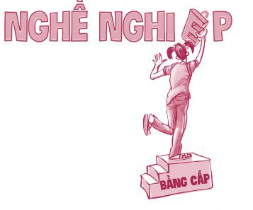
2. Giáo dục đại học sẽ mở ra cho bạn nhiều cơ hội!
Hãy tưởng tượng cảnh bạn đọc được một thông báo tuyển dụng trên mạng về một công việc tuyệt vời mà bạn yêu thích và có thể bạn sẽ làm rất giỏi. Bạn hào hứng muốn nộp đơn và mong được dự phỏng vấn. Nhưng rồi bạn đọc được yêu cầu: “Công việc này đòi hỏi bằng cử nhân”. Thế là trái tim bạn tan nát. Rất có thể bạn phù hợp với công việc này hơn bất kỳ ứng viên nào khác, nhưng điều đó không quan trọng. Nhà tuyển dụng thậm chí còn không xem đến hồ sơ của bạn. Càng về sau, các tiêu chuẩn tuyển dụng càng cao và cơ hội nghề nghiệp thường chỉ dành cho các ứng viên có bằng đại học. Vẫn luôn có một số trường hợp ngoại lệ, nhưng sao chúng ta phải mạo hiểm chứ?
3. Với tấm bằng đại học, bạn sẽ kiếm được nhiều tiền hơn!
Ngày nay, có rất nhiều điều quan trọng hơn việc kiếm tiền. Và việc sống cuộc sống không sung túc không có gì đáng xấu hổ cả. Nhưng nhìn chung, có nhiều tiền hơn đồng nghĩa với việc có thêm nhiều cơ hội, sự lựa chọn và khả năng giúp đỡ người khác. Việc có thêm một khoản tiền dư dả cũng không làm hại ai. Tôi hy vọng bạn đã sẵn sàng cho cú sốc phía sau. Hãy nhìn xem giáo dục có thể tạo ra sự khác biệt lớn lao như thế nào trong hai ngành nghề sau đây. (Số liệu này do Văn phòng Thống kê Lao động cung cấp, mặc dù các con số có thay đổi theo từng năm, nhưng mức chênh lệch thì không đổi.)
Một công nhân xây dựng chưa tốt nghiệp trung học có thu nhập trung bình khoảng 30.000 đô-la một năm. Tuy nhiên, một giám sát xây dựng, người cần phải có bằng tốt nghiệp trung học hoặc bằng cấp tương đương để đảm nhận vai trò này, có thu nhập trung bình khoảng 60.000 đô-la một năm. Trong khi đó, các giám đốc xây dựng, người phải có bằng đại học hệ bốn năm, có thu nhập trung bình lên đến 75.000 đô-la một năm. Một sự khác biệt khá là ấn tượng nhỉ!
Một thợ điện chưa tốt nghiệp trung học có thu nhập trung bình 45.000 đô-la một năm, mức lương này là tương đối cao đối với một người bỏ học trung học. Tuy nhiên, nếu học cao hơn, bạn có thể trở thành kỹ sự điện - điện tử và kiếm được 95.000 đô-la một năm. Thu nhập cao hơn gấp hai lần. Liệu bạn có muốn làm việc với luồng điện áp cao đáng sợ mà chỉ nhận được số tiền bằng một nửa lương của người bên cạnh bạn không? Chương trình đại học sẽ kết thúc sau bốn năm, còn mức lương thì kéo dài đến bốn mươi năm. Và nếu những con số này vẫn chưa thuyết phục được bạn theo đuổi việc học đại học, hãy tiếp tục xem những con số dưới đây. Số liệu này cũng được cung cấp bởi Văn phòng Thống kê Lao động.
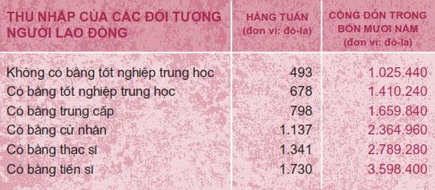
VƯỢT LÊN HOÀN CẢNH
Hiện nay, việc vào đại học có vẻ là bất khả thi với nhiều bạn trẻ, đặc biệt là những bạn có gia cảnh nghèo khó, không nhận được sự hỗ trợ từ gia đình hoặc các bạn đến từ các quốc gia đang phát triển. Nhưng nếu bạn có đủ khát khao, bạn sẽ tìm được con đường. Dưới đây là câu chuyện của André Marroquín Gramajo.
André sinh ra ở Guatemala, tại một thị trấn gần San Marcos. Gia đình em nghèo rớt mồng tơi. Tại Guatemala, chưa tới 1% thanh thiếu niên có thể tiếp cận giáo dục bậc đại học. Thế nhưng André luôn nuôi một ước mơ khác thường là được vào đại học.
André kể với tôi: “Khi em lên tám, em biết cách duy nhất để có nhiều cơ hội hơn trong cuộc sống và có đủ khả năng giúp đỡ cho gia đình mình là phải học thật giỏi. Hồi học tiểu học, em luôn đứng nhất lớp. Không phải vì em thông minh, mà vì em chăm học hơn tất cả các bạn”.
André tiếp tục học hành chăm chỉ và đạt được nhiều thành tích ấn tượng. “Các bạn em hay chơi bóng rổ sau giờ học và em thường phải từ chối các bạn để có thể ở nhà học bài. Em không có cha và việc đó thật khó khăn. Nhưng em đã thay thế sự có mặt của cha bằng những câu chuyện truyền cảm hứng mà em học được từ sách vở, phim ảnh và truyền hình.”
Năm cuối cấp trung học, André đã đặt mục tiêu được nhận vào một trong những trường đại học tốt nhất thủ đô Guatemala. Mọi người, kể cả thầy cô giáo của André, đều nói với em: “Thôi nào, André. Đó là một giấc mơ không tưởng. Tất cả chúng ta đều mơ giấc mơ đó, và hãy nhìn xem, cuối cùng tất cả chúng ta đều làm việc và dạy học ở San Marcos này”.
Nhưng André vẫn hết sức tập trung vào mục tiêu của mình. Em chỉ gặp một vấn đề duy nhất: Em không có tiền. Thế là André bắt đầu vận dụng tính chủ động và óc sáng tạo của mình. “Em đã gọi điện đến khoảng mười lăm đại sứ quán ở Guatemala để hỏi thăm xem liệu họ có chương trình cấp học bổng cho sinh viên đại học hay không. Nhưng không nơi nào có những chương trình như vậy. Rồi em tìm được tên của em trai tổng thống Guatemala trong danh bạ điện thoại. Em đã gọi điện cho ông ấy và giãi bày rằng em rất muốn được vào đại học và em cần một suất học bổng. Ông ấy đã đồng ý giúp đỡ, nhưng rồi anh trai ông hết nhiệm kỳ và mọi việc kết thúc ở đó.”
Dù vẫn chưa tìm được giải pháp nào khả thi, André vẫn tham gia kỳ thi tuyển sinh vào ba trường đại học tốt nhất ở thủ đô Guatemala với hy vọng nếu em hoàn thành tốt bài thi thì những điều tốt đẹp sẽ đến.
Một trong những trường mà em nộp đơn ứng tuyển là Đại học Francisco Marroquín (UFM) - trường đại học danh giá và đắt đỏ nhất Trung Mỹ. Một thành viên hội đồng tuyển sinh của trường, cô Mónica, nhớ lại:
“Tôi còn nhớ về thời điểm chúng tôi kiểm tra kết quả thi tuyển của tất cả các ứng viên. André đã đạt điểm tuyệt đối (100 điểm) ở bài thi toán và đạt điểm rất cao ở các bài thi còn lại. Chúng tôi tìm hiểu thông tin về em và nhanh chóng nhận ra em ấy sẽ không thể trả nổi học phí. Những chúng tôi vẫn phỏng vấn em theo đúng thủ tục tuyển sinh. Hội đồng tuyển sinh của tôi đã ấn tượng với André đến nỗi vào cuối cuộc phỏng vấn, chúng tôi đã nói với em: ‘André, em đã được nhận vào trường’.
Tôi còn nhớ em đã trả lời: ‘Ôi, em cảm ơn! Giờ thì em có thể về làng và nói với mọi người em đã được nhận vào trường đại học xuất sắc này. Nhưng cô ơi, em không có khả năng chi trả học phí nên cô có thể nhận bạn khác vào thay chỗ của em. Dù em không thể nhập học, ít nhất hiện tại em cũng đang vô cùng hạnh phúc vì em đã đạt được mục tiêu mình đề ra’.
‘Em đừng lo nhé André. Em sẽ là sinh viên đầu tiên được hưởng chương trình học bổng mới của chúng tôi. Học bổng này sẽ chi trả mọi thứ, từ học phí, chỗ ở cho đến sách vở, em cũng sẽ được nhận thêm một khoản phí sinh hoạt cá nhân kha khá nữa. Xin chúc mừng em!’
André chết lặng. Em đã không nói được lời nào suốt gần ba phút.”
Vài năm sau đó, André tốt nghiệp UFM với tấm bằng cử nhân Kinh tế học. Em tiếp tục học lên tiến sĩ ở Đại học George Mason và hiện giờ em đang là giảng viên Kinh tế học.
Ở vào hoàn cảnh của André, em hoàn toàn có thể than vãn về tất cả những khó khăn, trở ngại mình phải đối mặt: “Mình nghèo quá”, “Việc học hành thật khó khăn” hay “Mọi việc sẽ không đi đến đâu”. Nhưng thay vào đó, em đã tập trung hết sức vào những gì em có thể kiểm soát - thái độ sống, tính chủ động vượt khó và mục tiêu của bản thân.
CHỌN ĐÚNG TRƯỜNG
Trường đại học nào phù hợp với bạn? Chỉ có bạn mới quyết định được điều này. Nhưng có một số tiêu chí bạn không nên dựa vào để ra quyết định. Đừng chọn học một trường nào đó chỉ vì đứa bạn thân cũng chọn học ở đó. Đừng chọn một trường đại học chỉ vì đó là ngôi trường nổi tiếng về mảng tiệc tùng. Bạn cần xem xét những khía cạnh quan trọng hơn, chẳng hạn như tiêu chuẩn tuyển sinh của trường khó đến mức nào, trường được xếp hạng ra sao, vị trí tọa lạc, học phí, điều kiện sinh hoạt của trường như thế nào và thế mạnh của trường là gì. Ví dụ, nếu bạn lên kế hoạch tốt nghiệp đại học chuyên ngành âm nhạc, hãy nộp đơn vào những trường có thế mạnh là chương trình âm nhạc.
Chọn trường là một quyết định lớn, nên bạn hãy đảm bảo mình sẽ xem qua tất cả những quyền lựa chọn bạn có. Dưới đây là một số cách bạn có thể tham khảo:
• Tham dự ngày hội tuyển sinh.
• Bàn bạc với cha mẹ mình.
• Nói chuyện với những người đã hoặc đang theo học tại ngôi trường bạn đang quan tâm. Hãy hỏi xem họ thích và không thích gì về ngôi trường đó.
• Đọc tài liệu giới thiệu về trường và tìm hiểu thông tin trên trang web của trường.
• Đến thăm khuôn viên trường. Việc trực tiếp đến thăm trường là cách tốt nhất giúp bạn cảm nhận mọi thứ. Hãy đi bộ dọc các dãy hành lang, tham gia thử một hay hai lớp học, vào thư viện và ghé thăm ký túc xá.
• Đăng ký một lớp dự bị đại học (lớp dạy trình độ đại học được tổ chức ở trường trung học). Bạn có thể nhận các tín chỉ của cả bậc trung học và đại học. Đây là cơ hội để bạn được học thử một khóa học ở trình độ đại học.
CHUẨN BỊ CHO KỲ THI CHUẨN HÓA
Bạn có thể làm gì để chuẩn bị cho kỳ thi quan trọng này? Rất đơn giản. Từ năm lớp Chín, bạn hãy bắt đầu đăng ký các lớp học khó nhằm tăng cường vận động trí não và rèn luyện cách tư duy. Không có lựa chọn thay thế nào cho việc này.
Các bài thi chuẩn hóa không giống như các bài thi thông thường, bạn không thể nhồi nhét kiến thức để vượt qua kỳ thi SAT, ACT hay bất cứ bài thi chuẩn hóa nào khác. Thế nên bạn hãy bắt đầu ôn luyện khoảng vài tháng trước khi thi. Có rất nhiều nguồn tài liệu hữu ích mà bạn có thể tham khảo. Từ khóa “Ôn thi SAT/ACT” trên Google có đến mười triệu kết quả, bạn có thể lựa chọn những tài liệu phù hợp với mình trong số đó. Có rất nhiều trang web cung cấp tài liệu miễn phí.
Khi ôn thi, các bạn trẻ thường phạm phải một lỗi sai phổ biến: Các bạn thường chia bài thi thành nhiều phần và làm từng chút một; các bạn học một tiếng lúc này, rồi giải lao, rồi lại học thêm một tiếng lúc khác. Đừng quên rằng bài thi này kéo dài suốt bốn tiếng đồng hồ và bạn cần rèn trí óc mình để có khả năng tập trung bốn tiếng liên tục. Tôi đề nghị bạn làm ít nhất hai bài thi thử với bối cảnh giống như bài thi thật. Nếu bài thi thật diễn ra từ tám giờ sáng đến mười hai giờ trưa vào ngày thứ Bảy, bạn hãy thực hành thi thử từ tám giờ sáng đến mười giờ trưa vào đúng ngày thứ Bảy như thế, ít nhất là hai lần. Đến khi làm bài thi thật, bạn sẽ không bị lúng túng trước các tình huống bất ngờ.
Hãy nhớ rằng bạn có thể đăng ký tham dự các kỳ thi này bao nhiêu lần tùy ý. Nếu biết rõ điều này, bạn sẽ bớt lo lắng trong lần đầu tiên đi thi. Hãy ngủ một giấc thật ngon và nhớ ăn sáng đầy đủ nhé. Việc này cũng hữu ích lắm đấy.
CÁCH CHI TRẢ HỌC PHÍ ĐẠI HỌC
Học phí đại học rất đắt đỏ. Tin vui là bạn có thể nộp đơn xin học bổng và tiền trợ cấp từ rất nhiều nguồn. Trong quyển sách có tựa đề How to Go to College Almost for Free (tạm dịch: Cách vào đại học gần như miễn phí ), tác giả Ben Kaplan đã chia sẻ cách anh tận dụng các nguồn lực này để vào đại học.
Thực tế đã cho tôi một cái tát vào mặt - một cái tát đau điếng. Việc xảy ra vào một ngày đẹp trời năm cuối trung học. Khi đó, tôi đang lật giở những quyển catalog bóng loáng giới thiệu về các trường đại học. Những giấc mơ hoang dại về những chuyến phiêu lưu thú vị khi vào đại học đang nhảy nhót trong đầu tôi thì đột nhiên, thực tế phũ phàng của việc phải chi trả học phí đại học như một bàn tay vô hình giáng thẳng vào mặt tôi.
Lúc bấy giờ, tôi tha thiết mong muốn vào được một trường đại học hàng đầu, nhưng làm sao tôi có thể chi trả khoản học phí lên đến sáu con số để vào được ngôi trường mình lựa chọn đây?
Một ngày nọ, tại trung tâm tư vấn đại học và hướng nghiệp của trường, tôi vô tình nhìn thấy một chồng đơn đăng ký tham gia một chương trình học bổng quốc gia có tên gọi là Discover Card Tribute Awards. Khi tôi cầm tờ đơn trong tay, các câu hỏi bắt đầu chạy loạn xạ trong đầu tôi. Liệu có nhiều chương trình học bổng tương tự thế này không? Liệu một học sinh học trường công ở Eugene, Oregon có cơ hội giành được suất học bổng này hay không?
Dù vẫn còn hoài nghi, tôi vẫn quyết định thử nộp đơn xin học bổng. Thế là tôi bắt tay vào viết vài bài luận ngắn, cẩn thận điền vào đơn đăng ký và bổ sung vài lá thư giới thiệu.
Vài tháng sau đó, tôi đã nhận được một lá thư làm thay đổi cả cuộc đời mình. Bức thư viết: “Xin chúc mừng! Bạn vừa giành được một suất học bổng trị giá 2.500 đô-la”. Mọi việc bắt đầu có vẻ tươi sáng hơn. Vài tuần sau, tôi lại giành được thêm 15.000 đô-la nữa từ cuộc thi giành học bổng một phần cấp quốc gia! Giá mà bạn thấy cảnh cha mẹ tôi nhảy nhót khắp nhà khi biết tin.
Sau đó tôi lại có thêm một khám phá đổi đời nữa: Có rất nhiều các doanh nghiệp, hiệp hội, tổ chức, viện nghiên cứu và các nhóm cộng đồng khác muốn tài trợ học phí đại học cho sinh viên. Thế là tôi điền thêm nhiều lá đơn nữa, viết thêm nhiều bài luận và xin thêm vài lá thư giới thiệu. Đồng thời, tôi cũng tích cực học tập và tham gia các hoạt động cộng đồng. Việc nộp đơn xin các học bổng từ các tổ chức tốn khá nhiều công sức và tôi đã bị mất phần thưởng từ các cuộc thi giành học bổng. Nhưng nhờ kiên trì theo đuổi, cuối cùng tôi đã nhận được những phần thưởng lớn và tích lũy được xấp xỉ 90.000 đô-la tiền học bổng. Với số tiền này, tôi có thể theo học tại bất cứ ngôi trường nào tôi mong muốn. Tôi đã trang trải ổn thỏa gần như toàn bộ chi phí học đại học của mình nhờ các học bổng.
Như Ben đã khám phá ra, có rất nhiều loại hình tổ chức sẵn sàng chi tiền nhằm giúp bạn đầu tư cho giáo dục. Hầu hết các học bổng này được chia thành hai dạng. Dạng thứ nhất là học bổng hỗ trợ dành cho các bạn trẻ xuất thân từ những gia đình có thu nhập thấp. Dạng thứ hai là học bổng tưởng thưởng dành cho các bạn trẻ đặc biệt tài năng trên tất cả các lĩnh vực, không nhất thiết chỉ dành cho các bạn học giỏi.
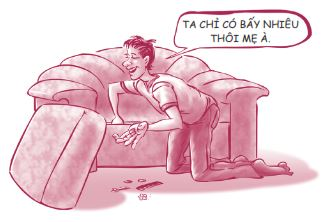
Nếu muốn hiểu rõ hơn về vấn đề này, bạn hãy đến gặp giáo viên phụ trách hướng nghiệp ở trường trung học của mình, nói chuyện với phòng hỗ trợ tài chính của trường đại học mà bạn muốn theo học hoặc bạn cũng có thể tham khảo sách của Ben Kaplan.
Đừng để chuyện tiền nong trở thành nguyên nhân bạn không thể vào đại học. Tôi xin nhắc lại, đừng để chuyện tiền nong trở thành nguyên nhân bạn không thể vào đại học. Nếu bạn muốn dùng khoản vay sinh viên và vừa học vừa làm, hãy cứ thực hiện. Trong tương lai, bạn sẽ kiếm được số tiền lớn gấp nhiều lần khoản vay đó. Chỉ có hai thứ thật sự xứng đáng để bạn phải mang nợ: đầu tư cho nhà cửa và đầu tư cho giáo dục.
Tìm hướng đi riêng
Tôi đã hỏi một vài đứa trẻ: “Lớn lên con muốn làm gì nào?”. Các em đã trả lời như sau:
• “Con muốn trở thành người mang mấy chiếc hộp từ những chiếc xe tải màu nâu đến nhà mọi người.” - Nathan, sáu tuổi
• “Con muốn được hạnh phúc.” - Mariah, mười tuổi
• “Con muốn trở thành giáo viên đàn hạc và làm mẹ.” - Beth, mười một tuổi
• “Con muốn trở thành nhân viên giao pizza.” - Mitchell, tám tuổi
• “Con nghĩ trở thành nhà khoa học hạt nhân sẽ rất vui.” - Peter, mười một tuổi
• “Con thật sự, thật sự, thật sự muốn trở thành kỹ thuật viên máy tính.” - Michael, mười một tuổi
• “Con muốn trở thành nhiếp ảnh gia và đi du lịch khắp nơi, thậm chí ra ngoài không gian nữa.” - Daysa, mười tuổi
• “Con muốn trở thành bác sĩ khám cho những loài động vật kỳ lạ.” - Taylor, mười tuổi
Hồi tôi còn ở tuổi teen, nếu có người hỏi tôi câu hỏi trên, tôi sẽ trả lời: “Em không biết nữa”. Lúc đó tôi thậm chí còn phân vân không biết nên mời ai đi cùng mình đến đêm vũ hội lớp Mười Một.
Nhưng khi ngày tốt nghiệp trung học gần kề, bạn phải bắt đầu suy nghĩ về việc bạn muốn trở thành ai khi lớn lên. Tôi không nói bạn phải tìm ra câu trả lời. Tôi chỉ nói về việc bắt đầu suy nghĩ về điều đó. Mục tiêu quan trọng nhất của bạn là bắt đầu gầy dựng một sự nghiệp lâu dài thay vì làm tạm bợ hàng loạt công việc khác nhau và không đi được đến đâu.
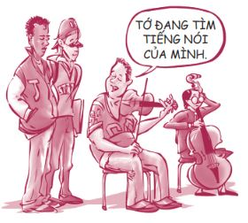
Điểm mấu chốt ở đây là bạn phải tìm được tiếng nói của bản thân. Tôi không có ý nói về “tiếng nói” theo nghĩa đen. “Tiếng nói” ở đây là đam mê, sứ mệnh của bạn, là việc mà bạn được sinh ra để thực hiện.
Hãy hình dung bốn vòng tròn như sau.
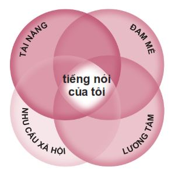
Việc mà tôi làm giỏi?
Đó là tài năng.
Việc mà tôi thật sự thích làm?
Đó là đam mê .
Việc mà xã hội đồng ý trả công để tôi làm?
Đó là nhu cầu xã hội .
Việc mà tôi cảm thấy mình nên làm?
Đó là lương tâm .
Vùng giao nhau của bốn vòng tròn này chính là tiếng nói của bạn. Hãy nghĩ về tiếng nói của bản thân khi bạn bắt đầu xác định trường đại học mình muốn theo học, các công việc bạn làm, chuyên ngành bạn chọn, v.v. Đến cuối cùng, bạn sẽ muốn gầy dựng một sự nghiệp giúp khai mở được tiếng nói của bản thân.
Cả bốn vòng tròn trên đều quan trọng. Ví dụ, có thể bạn yêu âm nhạc (đam mê) và thậm chí chơi nhạc giỏi (tài năng), nhưng bạn cũng phải tìm ra cách có thể kiếm sống được từ đam mê và tài năng của mình (nhu cầu xã hội). Cơ hội trở thành một ngôi sao nhạc rock là 1/1000, thế nên đừng đặt cược tất cả vào ước mơ này. Bạn có thể kiếm sống bằng cách dạy nhạc hoặc viết nhạc phim, nhạc cho các chương trình quảng cáo trên tivi.
Tương tự như vậy, bạn cũng sẽ không muốn chôn chân trong một công việc được trả lương hậu hĩnh, nhưng lại không khiến bạn hạnh phúc, không khai thác được tiềm năng của bạn.
Có thể từ tận đáy lòng, bạn cảm thấy có một điều đặc biệt nào đó bạn phải làm với cuộc đời mình (lương tâm).
Ví dụ, Ben Kaplan, người đã tìm ra cách vào đại học mà không cần tiền, hiện nay đang xây dựng sự nghiệp của mình quanh việc giúp đỡ các bạn trẻ khác nhận được các phần thưởng và học bổng, từ đó có đủ khả năng tài chính để vào đại học. Đây chính là động cơ đặc biệt được dẫn dắt bởi lương tâm của Ben.
Tôi đã có một cuộc trò chuyện với Brinlee ở California. Nhờ tìm ra được tiếng nói của bản thân, bạn ấy đã có thể xoay chuyển đời mình và giờ đang trên đường gầy dựng sự nghiệp.
Năm học lớp Chín, học lực của mình rất tốt. Mình muốn trở thành một học sinh thật xuất sắc. Nhưng mọi khó khăn đột nhiên xuất hiện cùng một lúc. Gia đình mình vướng vào rắc rối, rồi đứa bạn thân phản bội mình. Mình đã nghĩ cả thế giới này đều ghét mình.
Thế rồi mình tìm đến ma túy và rượu. Mình cũng bắt đầu đi chơi với những người bạn xấu. Bọn mình tiệc tùng liên miên. Kết quả là điểm GPA của mình tụt xuống còn 1,1. Mọi thứ lúc đó thật tệ hại. Sau nhiều tháng như thế, một buổi sáng nọ mình thức dậy, đầu óc như trì độn vì đêm hôm trước mình đã dùng ma túy. Mình chợt nghĩ: “Mình không thể cứ sống thế này cho đến hết đời”. Cùng ngày hôm đó, chị họ của mình đã có một cuộc nói chuyện hết sức thẳng thắn cùng mình, chị ấy nói: “Mẹ em cầu nguyện cho em mỗi ngày. Em vốn là một cô bé thông minh mà. Việc gì đã xảy ra với em vậy? Chị cũng từng rơi vào hoàn cảnh như em, Brinlee, và em không thể lãng phí đời mình như thế bởi vì còn rất nhiều thứ tốt đẹp đang chờ đợi em phía trước”.
Mình đã cai ma túy ngay lập tức. Lúc đó mình còn nghiện cả rượu nữa, nhưng sau khi nhìn thấy tấm gương của cha mình (ông cũng là một người nghiện rượu), mình đã quyết định mình không muốn sống như ông và cuối cùng đã thoát khỏi được chứng nghiện rượu.
Năm học mới bắt đầu và mình nghĩ: “Mình phải thay đổi thôi. Mình phải bắt đầu làm những điều đúng đắn”. Mình đã quyết định tham gia làm báo ở trường. Lúc còn học cấp hai, mình rất thích viết truyện ngắn. Khi mình chia sẻ tác phẩm của mình với các bạn, họ đều nói: “Ôi trời ơi, Brinlee, truyện này hay thật đấy”. Mình thường trả lời: “Ồ đây chỉ là một câu chuyện vớ vẩn tớ tự viết thôi mà”. Họ lại khẳng định:
“Không, truyện này hay thật đấy.
Mình nói nghiêm túc mà.”
Kể từ khi trở thành một thành viên của lớp báo chí, mình bắt đầu viết khoảng năm bài cho mỗi chủ đề. Vị cố vấn của tờ báo nói với mình: “Chà, tôi rất ấn tượng về em đấy”. Suốt những năm tiếp theo, mình đã học tập hết sức chăm chỉ. Giờ mình đã là học sinh năm cuối và là tổng biên tập cho tờ báo của trường. Mình cũng đang làm việc cho một tờ báo địa phương. Sau này, mình muốn trở thành một chủ tòa soạn báo.
Việc tìm ra công việc đúng sở trường của mình thật tuyệt vời. Công việc yêu thích giúp bạn tránh suy nghĩ về những thứ tiêu cực trong cuộc sống, khiến bạn bận rộn và cảm thấy hạnh phúc. Ngày hôm qua, trên đường lái xe về nhà, mình đã nghĩ: “Ôi trời ơi, mình cảm thấy hạnh phúc biết bao”.
Brinlee đang bắt đầu tìm được tiếng nói của mình. Có thể bạn sẽ cần nhiều thời gian hơn để tìm ra tiếng nói của bạn, nhưng hãy cứ kiên nhẫn. Tôi từng không xác định được rõ ràng tôi muốn làm gì với đời mình cho đến tận vài năm sau khi tốt nghiệp đại học. Dưới đây là một vài yếu tố bạn nên cân nhắc nếu muốn tìm ra được tiếng nói của mình.
MỞ RỘNG PHẠM VI TÌM HIỂU
Ngạn ngữ có câu: “Hãy khảo sát ở các cánh đồng lớn, nhưng chỉ vun trồng ở những cánh đồng nhỏ thôi”. Bạn sẽ không biết mình thật sự thích gì nếu bạn không thử. Vì vậy, khi bạn còn học trung học, hãy đăng ký học nhiều lớp khác nhau. Có rất nhiều lớp học thú vị bạn có thể lựa chọn. Hãy khoanh tròn những lớp học bạn thích.
Ngoài ra bạn còn có thể tham gia rất nhiều câu lạc bộ hoặc đội nhóm. Hãy quan sát mọi thứ xung quanh. Có đôi lúc, chỉ một sự kiện tình cờ bé nhỏ cũng có thể khơi dậy một điều vĩ đại nơi bạn. Chuyện như thế đã xảy ra với Justin.
Một ngày nọ, cha mình mang về nhà một phần mềm kiến trúc 3-D vì ông biết mình rất thích các công việc liên quan đến thiết kế. Cha nói mình hãy cài chương trình vào máy và cứ thỏa sức khám phá. Đây chỉ mới là bước khởi đầu. Năm mình học lớp Bảy, giáo viên lớp Đại số 1 nói với cả lớp rằng dự án cuối khóa của bọn mình là thiết kế một ngôi nhà. Mình thích mê. Mình bắt tay vào thực hiện dự án ngay ngày hôm sau và hoàn thành nhiệm vụ sớm hơn một tuần so với thời hạn cho phép. Mình đã đạt 99% yêu cầu của bài tập. Thành quả này khiến mình muốn thiết kế thêm thật nhiều ngôi nhà khác. Một ngày nào đó mình sẽ thiết kế và xây dựng tòa nhà chọc trời cao nhất thế giới.
Nếu có cơ hội, hãy thử làm nhiều công việc khác nhau. Thay vì nộp đơn xin làm cùng một công việc làm thêm mỗi năm, hãy thử làm cả những công việc mới mẻ bạn chưa làm bao giờ. Nếu bạn thật sự dũng cảm, hãy khởi nghiệp để trở thành doanh nhân tuổi teen. Dưới đây là một số tấm gương bạn trẻ khởi nghiệp thành công được đăng trên tạp chí dành cho các doanh nghiệp nhỏ có tên The Costco Connection .
Doanh nghiệp Christopher Haas
Christopher Haas
Temucula, California
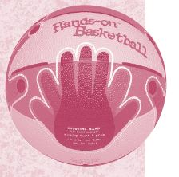
Chris, mười bảy tuổi, có khả năng ném bóng vào rổ vô cùng chuẩn xác. Đa số các bạn cùng lớp của cậu không có được kỹ năng đó. “Mình để ý thấy nhiều bạn trẻ không thể ném bóng giỏi vì họ không giữ quả bóng đúng cách”, Chris chia sẻ. Thế là cậu ấy đi vào nhà xe, nhúng tay vào thùng sơn và đặt tay vào đúng vị trí trên quả bóng rổ.
Lúc đó cậu không hề biết mình vừa làm một hành động thiên tài: Dấu tay in trên quả bóng ấy giúp mọi người giữ quả bóng đúng cách trong khi ném. Ngày nay, các cửa hàng chuyên bán đồ thể thao đều có bán Bóng rổ Hands-On và Bóng bầu dục Hands-On của cậu. Chính xác là cậu ấy đã bán được hơn một triệu sản phẩm Bóng rổ Hands-On. Chris nhớ lại, mọi việc thật ra không phải là một cú dứt điểm ngon ăn ngay từ đầu. “Trong vòng một năm rưỡi, mình đã bị mười hai công ty từ chối cho đến khi có một công ty quyết định cho sản phẩm của mình một cơ hội”.
Chris đã kiếm được đủ tiền để trang trải học phí đại học cho bản thân, cả cho em trai và em gái của mình. Về sau, anh bán lại phát minh của mình cho một nhà sản xuất trang thiết bị thể thao.
Luv Ur Skin
Izzi Dymalovski
Melbourne, Úc
Lúc mới tám tuổi, Izzi Dymalovski từng xin mẹ dùng các sản phẩm chăm sóc da của bà để rửa sạch lớp trang điểm còn sót lại trên da sau một buổi biểu diễn văn nghệ. Mẹ cô bé nói rằng các sản phẩm ấy chỉ dành cho người lớn và có rất nhiều hóa chất, không thích hợp cho làn da non nớt của em. Mẹ của Izzi nhất quyết chỉ cho phép em dùng sản phẩm dành cho trẻ em nhỏ để rửa sạch lớp trang điểm trên mặt. Izzi đã cảm thấy khá thất vọng khi phải dùng sản phẩm dành cho trẻ em nhỏ khi em đã tám tuổi.
Mẹ của Izzi làm việc trong ngành công nghệ sinh học và bà đã khuyến khích con gái đầu tư thời gian và công sức để tự tạo ra các sản phẩm chăm sóc da cho riêng mình. Các sản phẩm này chỉ bao gồm các nguyên liệu an toàn đối với trẻ em. Izzi đã tạo ra sữa rửa mặt, sữa tắm, kem dưỡng thể và dưỡng ẩm da mặt. Tất cả các sản phẩm này đều không chứa các thành phần gây hại cho da của người trẻ tuổi.
Izzi lập tức bắt tay vào thiết kế logo, nhãn hiệu và bao bì. Ở tuổi mười ba, cô đã cho ra mắt thị trường dòng sản phẩm chăm sóc da của riêng mình và trở thành doanh nhân trẻ tuổi nhất xuất hiện trên chương trình thực tế Shark Tank của Úc. Các sản phẩm của cô giờ đã được phân phối trên toàn nước Úc và bán online khắp toàn cầu.
Cô bé mười bốn tuổi đã lọt vào danh sách Doanh nhân trẻ trong chuyên mục 18 Under 18 của tạp chí Fortune .
ĐỂ Ý ĐẾN NHỮNG SỰ TÌNH CỜ MAY MẮN
Một trong những từ tiếng Anh mà tôi yêu thích nhất chính là serendipity - sự tình cờ may mắn. Nói cách khác, một số sự kiện không mong muốn hóa ra lại mang đến kết cục tốt đẹp. Có nhiều lúc, những sự tình cờ may mắn có thể giúp chúng ta khám phá ra mình muốn làm gì khi lớn lên.
Khi mới tham gia vào đội bóng của trường, tôi muốn chơi ở vị trí trung vệ chạy. Nhưng lúc bấy giờ đội chúng tôi đang thiếu trung phong nên huấn luyện viên Drury đã để tôi chơi vị trí trung phong. Tôi thầm nghĩ: “Trung phong ư? Quả là một vị trí ngu ngốc!”. Nói ngắn gọn, tôi đã chơi ở vị trí trung phong ấy suốt quãng thời gian trung học rồi nhận được một học bổng để chơi vị trí trung phong cho một trường đại học lớn. Tại đó, tôi đã đăng ký một lớp học với vị giáo sư đã truyền cảm hứng cho tôi lựa chọn chuyên ngành Ngôn ngữ Anh. Lựa chọn này đã đưa tôi đến với con đường viết lách và ảnh hưởng đến toàn bộ sự nghiệp của tôi. Nếu mắc kẹt ở vị trí trung vệ chạy, rất có thể tôi đã không chơi bóng ở đại học (vì tôi không đủ to con để đảm nhiệm tốt vị trí này), rất có thể tôi đã không gặp được vị giáo sư ấy và rất nhiều việc khác nữa có thể đã không xảy ra. Tôi rất vui vì huấn luyện viên Drury đã nhìn thấy điều gì đó ở tôi mà bản thân tôi đã không nhìn thấy được. Đó chính là sự tình cờ may mắn, đúng không nào?
Hãy sẵn sàng đón nhận những sự tình cờ may mắn đến với bạn dưới hình thức một cơ hội may mắn, một sự ngẫu nhiên, một sự cố hoặc một ai đó nhìn thấy ở bạn một điều gì đó mà bản thân bạn không nhìn thấy. Trên con đường trưởng thành, những việc không như ý lúc đầu thường sẽ trở thành những viên gạch lót đường đưa bạn đến với một tương lai tốt đẹp. Tôi có một anh bạn tên John. Khi còn ở tuổi thiếu niên, anh đã gặp rất nhiều khó khăn liên quan đến lòng tự trọng. Ngày nay, anh đã trở thành một tác giả rất thành công. Hầu hết sách của anh nói về cách đương đầu với những khó khăn trong cuộc sống ở tuổi thiếu niên. Đôi khi, chính chúng ta lên kế hoạch cho sự nghiệp của mình, nhưng cũng có đôi khi những điều ta hằng tìm kiếm lại vô tình đến với ta.
SUY NGHĨ THẤU ĐÁO
Bạn sẽ ngạc nhiên nếu biết số lượng người bị mắc kẹt trong những công việc không có tương lai chỉ vì họ chưa bao giờ chịu dành thời gian để suy nghĩ thấu đáo về công việc mà mình muốn làm. Vậy bạn nên nghĩ gì? Hãy nghĩ về những điều bạn thật sự thích làm và cả những điều bạn thật sự ghét làm, về thu nhập và lối sống mà bạn mong muốn. Nếu bạn không muốn phải phục tùng người khác, hãy trở thành một chủ doanh nghiệp. Nếu bạn không thích di chuyển nhiều và không thích một cuộc sống thường xuyên xáo trộn thì đừng tham gia quân đội.
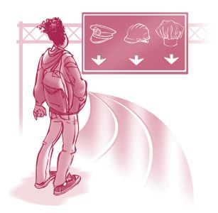
Matt, em rể của tôi, đã rất khôn ngoan trong vấn đề này. Cậu ấy đã quyết định mình muốn làm bác sĩ. Cậu ấy chỉ không chắc mình nên theo chuyên khoa nào. Thế nên trong suốt thời gian học đại học và học trường y, Matt đã cẩn thận tìm hiểu rất nhiều chuyên khoa. Cậu nói chuyện với nhiều bác sĩ thuộc những chuyên khoa khác nhau và tìm hiểu về cuộc sống của họ. Cậu đã hỏi xem họ thích và không thích gì về công việc của mình, họ có lối sống như thế nào. Matt có hứng thú với chuyên khoa phẫu thuật chỉnh hình, nhưng theo những gì cậu ấy biết, các bác sĩ thuộc chuyên khoa này thường có cuộc sống hết sức bận rộn với lịch làm việc dày đặc. Thế nên Matt đã quyết định trở thành một bác sĩ gia đình. Công việc này mang đến cho cậu ấy mức thu nhập khá tốt đồng thời vẫn đảm bảo cậu ấy có một cuộc sống cân bằng.
Có lẽ điều quan trọng nhất chính là hãy làm việc mà bạn yêu thích. Tôi rất thích câu nói của Maya Angelou về vấn đề này:
“Bạn chỉ có thể thật sự gặt hái thành công trong công việc mà bạn yêu thích. Đừng coi tiền bạc là mục tiêu duy nhất. Thay vào đó, hãy theo đuổi những việc mà bạn thích làm và làm giỏi công việc ấy đến mức người khác không thể rời mắt khỏi bạn.”
Mặc dù tiền bạc không phải là tất cả, bạn vẫn cần cân nhắc kỹ lưỡng và hiểu rõ các vấn đề liên quan đến tiền lương khi lựa chọn công việc.
Tôi xin nói rõ việc chúng ta kiếm được bao nhiêu tiền và loại hình công việc chúng ta đảm nhận không liên quan gì đến giá trị con người chúng ta. Tất cả công việc đều đáng quý như nhau, dù là công việc được trả lương cao như bác sĩ hay công việc có mức lương thấp như trông nom cửa hàng tạp hóa. Quan điểm của tôi là: Nền tảng giáo dục tốt sẽ cho bạn nhiều sự lựa chọn. Hầu hết những người làm các công việc có mức lương thấp đều không chủ động chọn những nghề nghiệp đó, họ phải làm bởi vì đó là lựa chọn duy nhất của họ. Có thể họ vẫn muốn có một công việc trả lương tốt hơn, nhưng lại không được như ý vì thiếu các kỹ năng cần thiết.
TÌM THẤY TIẾNG NÓI
Nếu bạn muốn tìm hiểu kỹ hơn về tiếng nói của mình, hãy thử hoạt động Tìm Tiếng nói trong những trang tiếp theo.
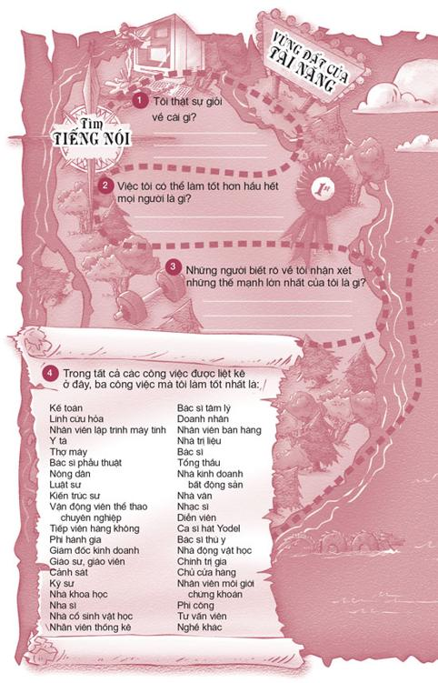
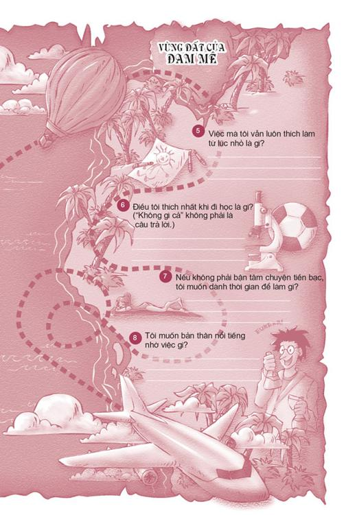
Hãy kiên nhẫn, bạn tôi ơi
Nếu bạn vẫn chưa biết rõ lớn lên mình muốn làm gì, hãy cứ thư giãn. Không có gì phải vội vã. Hôm nay bạn không cần phải đưa ra quyết định về nghề nghiệp, chuyên ngành học hay bất cứ thứ gì cả. Hãy cứ bình tĩnh quan sát xung quanh. Hãy tìm xem điều gì thật sự khiến bạn thấy phấn khích và ghi chú lại những gì bạn làm giỏi.
Một lần nọ, khi tôi đang nói chuyện với một số bạn trẻ ở thủ đô Seoul, Hàn Quốc về việc tìm ra tiếng nói của mình, một bạn gái đã hỏi: “Nếu việc mình thích làm và việc mình cảm thấy mình nên làm khác nhau thì phải làm thế nào?”. Đây là một câu hỏi hay. Tôi trả lời: “Lương tâm được đặt lên hàng đầu, trước cả tài năng, đam mê hay nhu cầu xã hội. Hãy đặc biệt chú ý đến trực giác của bạn. Bạn sẽ cảm nhận được trực giác của mình dưới dạng cảm giác, ấn tượng và các ý tưởng”.
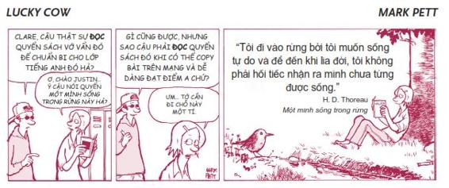
SỨ MỆNH ĐỜI BẠN
Sứ mệnh đời bạn được sinh ra cùng với bạn, đồng hành với bạn kể từ lúc bạn chào đời. Nói cách khác, tôi tin rằng mỗi người trong chúng ta đều đến thế giới này với một mục đích thiêng liêng và một công việc đặc biệt mà chúng ta cần phải làm. Tôi rất thích cách người dẫn chương trình Oprah Winfrey mô tả về điều này:
Hãy dũng cảm theo đuổi đam mê của bạn. Nếu bạn không biết đam mê của mình là gì, hãy nhớ rằng một trong những lý do bạn tồn tại trên trái đất này là để tìm ra niềm đam mê ấy. Câu trả lời sẽ không đến với bạn thông qua một buổi lễ công bố đặc biệt hay một bụi cây cháy sáng như trong kinh thánh. Sứ mệnh đời bạn chính là đi tìm sứ mệnh đời bạn. Và một khi bạn đã tìm được, hãy bắt đầu làm việc với kỷ luật, lòng kiên trì và sự chăm chỉ để theo đuổi đam mê ấy.
Làm thế nào bạn biết được liệu mình có đang đi đúng đường, đang ở cạnh đúng người, hoặc đang làm đúng công việc mình nên làm? Nó cũng giống như cách bạn nhận ra khi điều đó không đúng: Bạn cảm nhận được. Mỗi người trong chúng ta đều có thiên hướng cá nhân hướng đến sự vĩ đại, và bởi vì thiên hướng của bạn là độc nhất, giống như dấu vân tay vậy, bạn là người duy nhất có thể cảm nhận được liệu mình có đang đi đúng đường hay không.
Hãy chú ý đến những gì khiến bạn cảm thấy tràn đầy sinh lực, phấn khích và được kết nối với thế giới xung quanh - những gì khiến bạn hạnh phúc. Hãy làm những gì bạn thích, đền đáp lại cuộc đời bằng hành động phụng sự và bạn sẽ vượt trên cả sự thành công, bạn sẽ chiến thắng.
Ngày nay, Oprah được xem là một trong những phụ nữ có ảnh hưởng nhất trên thế giới. Thế nhưng cô từng có một khởi đầu rất gian nan. Oprah được sinh ra trong một gia đình nghèo khổ và mẹ của cô là một người mẹ đơn thân. Cô được bà ngoại nuôi dưỡng và đã phải chịu đựng nạn lạm dụng cũng như nạn phân biệt chủng tộc nghiêm trọng suốt thời thơ ấu. Tuy nhiên, dù phải sống trong cảnh bất hạnh, cô luôn cảm thấy mình có thể cống hiến cho cuộc đời một điều gì đó thật đặc biệt. Nhiều năm trôi qua, cô đã từng bước vững vàng tìm được tiếng nói của mình: giúp phụ nữ có một cuộc sống hạnh phúc hơn, viên mãn hơn.
Có thể bạn sẽ nói: “Đúng là vậy. Nhưng tôi đâu phải Oprah”. Tôi đồng ý với bạn. Bạn không phải là Oprah, nhưng bạn cũng có những phẩm chất và tài năng độc đáo không ai khác có được. Bạn chắc chắn có thể làm một điều gì đó đặc biệt với đời mình mà không ai khác có thể làm được. Có rất nhiều cách để phục vụ và cống hiến ở trường, ở nơi làm việc hay thậm chí ở ngay trong nhà bạn.
Một cách tuyệt vời để thể hiện tiếng nói của mình chính là viết ra lời xác quyết cá nhân. Dưới đây là lời xác quyết của một bạn gái trẻ ở Kuala Lumpur, Malaysia. Lời xác quyết này thể hiện công việc mà bạn ấy muốn làm khi trưởng thành và kế hoạch học tập của bạn ấy để đạt được mong muốn đó.
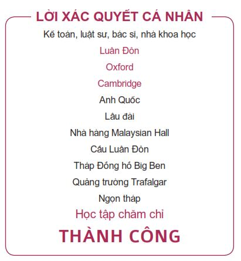
SỨC MẠNH PHI THƯỜNG CỦA TRÍ NÃO CON NGƯỜI
Trí não của bạn thật sự rất phi thường. Vì vậy đừng lãng phí đầu óc của mình vào những việc vô bổ. Hãy rèn luyện trí não. Việc bạn sử dụng trí não của mình như thế nào chính là một trong sáu quyết định quan trọng nhất đời bạn. Tôi hy vọng bạn sẽ lựa chọn con đường đúng đắn bằng cách tiếp tục theo đuổi việc học, nỗ lực học hành hết sức mình (thậm chí dù bạn có không thích học đi nữa), tự chuẩn bị thật tốt để vào đại học và có một công việc tuyệt vời đúng với sứ mệnh của bạn. Nếu những năm qua bạn vẫn đang mệt nhọc lê bước trên con đường sai lầm, hãy vòng lại con đường đúng đắn ngay hôm nay. Chắc chắn bạn sẽ phải nỗ lực nhiều hơn mọi người để bù đắp lại khoảng thời gian bạn đã lãng phí, nhưng trễ vẫn tốt hơn là không bao giờ.
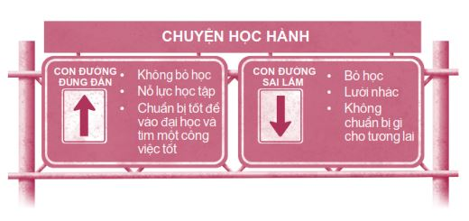
Alicia, học sinh trường Trung học Allen East, đã nói về vấn đề này như sau: “Học vấn của bạn giống như tấm lưới an toàn trong rạp xiếc vậy. Nếu không may bạn có sẩy chân té trong lúc thực hiện một trò mạo hiểm, tấm lưới này sẽ đỡ lấy bạn”. Tôi hoàn toàn đồng ý với bạn ấy. Nếu có học vấn tốt, bạn có thể bị mất việc nhưng rồi sẽ nhanh chóng tìm được việc mới. Sự an toàn trong công việc không có nghĩa bạn sẽ có một công việc ổn định. An toàn trong công việc có nghĩa là bạn có khả năng tìm được một công việc tốt mọi lúc, mọi nơi bởi vì bạn là một ứng viên sáng giá, bạn biết cách tạo ra giá trị, bạn có “những kỹ năng tuyệt vời”, theo như cách nói của Napoleon Dynamite.
ĐIỀU THÚ VỊ TIẾP THEO
Bạn đã từng phải đương đầu với những cô bạn xấu tính và nạn bắt nạt chưa? Có lẽ ai cũng đã từng trải qua việc này rồi nhỉ?
Hãy đọc tiếp để xem các bạn khác đã vượt qua việc này như thế nào nhé.
NHỮNG BƯỚC NHỎ
Giới thiệu về Những Bước nhỏ
Ở cuối mỗi chương, tôi sẽ giới thiệu với các bạn mười Bước nhỏ. Đây là những bước tiến dễ dàng, đơn giản mà bạn có thể thực hiện ngay để áp dụng vào thực tế những gì bạn vừa đọc được. Bạn có thể thử tất cả các bước hoặc chỉ chọn những bước đi nào bạn thấy thích.
1. Nếu bạn đang định bỏ học, hãy tự chuẩn bị cho tương lai bằng cách lặp lại thật lớn mỗi ngày câu: “Tôi háo hức mong đợi được làm những công việc được trả lương thấp trong suốt phần đời còn lại”.
2. Hãy liệt kê ba ích lợi của việc tốt nghiệp trung học và học tiếp đại học.
_______________________________________________
_______________________________________________
_______________________________________________
3. Trong tuần này, hãy chọn một đêm để đi ngủ thật sớm và ngủ đủ giấc (từ tám đến chín tiếng đồng hồ) và để ý xem bạn có cảm thấy vui vẻ khi đến trường vào ngày hôm sau không nhé.
4. Hãy thực hiện thử thách “Sống không màn hình” trong vòng một tuần. Hãy dành trọn bảy ngày không xem tivi, không đi xem phim ở rạp, không dùng máy tính, không chơi điện tử, v.v. và tính xem bạn tiết kiệm được bao nhiêu thời gian.
5. Nếu được đến thăm một nơi trên thế giới, bạn muốn được đi đâu? Hãy liệt kê nhanh một danh sách các ý tưởng về địa điểm bạn muốn đến và cách thức bạn đến đó.
Ý tưởng:
_______________________________________________
_______________________________________________
_______________________________________________
6. Nếu có giáo viên nào giao nhiệm vụ để nhận thêm điểm cộng, hãy xung phong nhận nhiệm vụ ấy.
7. Hãy cố gắng xây dựng mối quan hệ thật tốt với một trong những giáo viên của bạn.
Hãy chào hỏi
Hãy đặt câu hỏi
Hãy thân thiện
Hãy khen ngợi chân thành
8. Hãy xây dựng nề nếp học tập ở nhà và luôn coi đó là ưu tiên hàng đầu của bạn. Hãy dành ra một khoảng thời gian nhất định trong ngày để học bài.
9. Hãy nghĩ xem bạn có người quen nào đang làm công việc bạn muốn làm khi bạn lớn không. Nếu có, hãy hỏi họ liệu bạn có thể quan sát một ngày làm việc của họ không.
10. Bạn thật sự muốn nghiên cứu kỹ hơn về chủ đề nào?
_______________________________________________
Bạn có thể học hỏi thêm bằng cách nào?
Sách, tạp chí để đọc: _______________________________
_______________________________________________
Các trang web để khám phá: _________________________
_______________________________________________
Những người có thể nói chuyện cùng: _________________
_______________________________________________
Các lớp học có thể đăng ký: _________________________
_______________________________________________
Những nơi để đến thăm: ___________________________
_______________________________________________